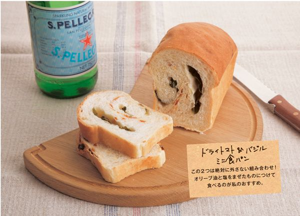
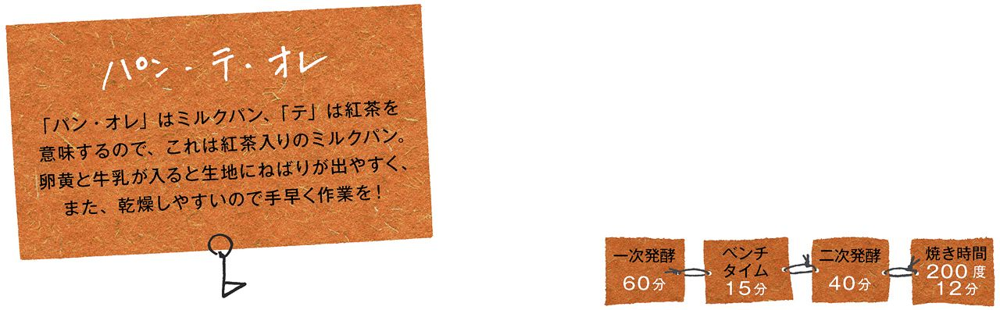

| お店みたいなおうちパン | |
| 藤田 千秋 | |
| 主婦の友社 (2010) | |
はじめに
はじめて自分でパンを焼いたときのことを思い出してみました。
「おうちで、そして自分の手でこねてパンが焼けるなんて！！」と感動したのを覚えています。
お店にかけつけなくても焼きたてが味わえる幸せ......
それって、すごくぜいたく！！
でも、せっかくならこの幸せを誰かと分かち合いたい。
（特に私はそういう性分）
誰かに食べてもらいたくなるのはみんないっしょですよね。
そして食べてもらうと「おいしい！」「すごい！ お店みたい！」と、うれしい言葉が返ってくることも。
そうすると、もっとじょうずに焼きたくなって、研究のためにパン屋をのぞいたり......
自分なりにトッピングや成形の仕方を工夫するのって楽しい。
目指すのは「お店みたいなパン」
でも、「お店では買えないオーダーメイドのパン」
この本では、そんなパンをたくさんご紹介したいなと思います。
この本の使い方
●基本生地について
２種類紹介しています。
シンプルな生地は８～13ページ、リッチな生地は62～65ページでプロセス写真つきで詳しく説明しています。
まずは、基本の生地を作ってコツをつかんでから、アレンジパンを作るのがおすすめです。
●材料について
強力粉は「日清カメリヤ」を使用しています。
砂糖は特に記載のない限り、上白糖を使用しています。
バターは食塩不使用のものを、卵はLサイズを用意してください。
●この本の決まりごと
＊小さじ１＝５mℓ、大さじ１＝15mℓ、１カップ＝200mℓです。
＊オーブンの焼き時間は電気オーブンを基本にしています
（ガスの場合も併記／でき上がり写真はガスオーブンを利用）。
レシピの焼き時間、温度を参考に、様子を見て調整してください。
●パン作りでたいせつなこと
１ 計量は正確に
２ 水分量は調整しながら
３ パン生地はやさしく扱う
４ 乾燥させない
５ 温度や時間は目安
中で詳しく説明しますが、この５つを守れば、大きな失敗はありません。
１章 シンプルな生地でお食事パン
パン好きな人が愛してやまない、カリッと焼けた皮ともっちりした小麦の味が、思う存分楽しめるパンです。リーンなパンとも呼ばれ（リーンは「簡素な」という意味）、何度食べても飽きのこない配合でそぼくな味わいが特徴です。ここでは、基本のシンプルな生地とアレンジパン29種類をご紹介します。
基本のシンプルな生地を作りましょう
「パン作りって大変そう......」そう思っている人も多いのでは？
でも、実は強力粉とイーストさえあれば、あとは塩や砂糖など、おなじみの材料で作れるんです！
作り方の大きな流れはどのパンもほぼ同じなので、ここで基本の作り方をマスターしましょう。
手作りならではの、おうちパンの醍醐味を味わって。
●材料（25㎝のバゲット４本分）
強力粉......300g
ドライイースト......５g
砂糖......10g
塩......５g
水......200g
バター......10g
強力粉（仕上げ用）......適量
●下準備
バターは室温でやわらかくする。
１ 生地をこねる
１ ボウル（直径24㎝くらい）に砂糖、塩を入れて水（またはぬるま湯）を入れ、指先でかきまぜてとかす。強力粉とイーストを一度に加える。
水は少しとりおいて
粉の状態（商品の違いや保存状況）によっては水の全量を加えると、ベタついてしまうことも。小さじ１程度をとりおき、ボウルの中でまとめながら判断して調整を。ボウルの中では少しやわらかめでも、こねるうちにしまってくるので、何度か試して感覚をつかんでください。
２ まぜはじめはベタベタして指にくっついてしまうが、ボウルの側面の生地をきれいにとりながらまぜていく。
３ 粉と水が均一にまざったら、手のひらのつけ根でボウルに生地を押しつけるようにしてこね、ひとまとめにする。
水の温度の目安
春、秋は水道水の温度のもの、夏は冷水、冬は35度ぐらいのぬるま湯を使います。これは生地をこね上げたとき、イーストの働きやすい温度に仕上げるための調整です。
４ 生地を台の上にとり出して両手でこねる。体重をかけながら両手のひらのつけ根で、生地を向こう側に押しつけて、次は手前にたたむという作業を繰り返す。最初は少しベタつく感じがあっても、こねるうちに生地がしまってなめらかになる。
５ バターを２回に分けてねり込んでいく。最初はクチャクチャと音がするが、なじんでくると音がしなくなる。生地ののびがよくなり、つやが出てくるまで両手で力強くこねる（こねる時間は個人差があるが15分くらいが目安）。
６ 生地に張りが出るまでこねたら、小指の側面を使って両手で生地の縁をすくい上げるようにして、丸く形をととのえる。
バゲットこぼれ話
本来、バゲットの生地には砂糖や油脂は入りませんが、ここではほかのパンに展開しやすいように、砂糖とバターが入っています。そのため焼き色がこんがりとつきます。
２ 一次発酵
７ サラダ油（分量外）をボウル（直径21㎝くらい）に薄く塗り、生地を入れてラップをかけ一次発酵させる。あたたかい場所で生地が２倍にふくらむまで、約60分発酵させる。
ボウルに油を塗ることを忘れずに
油はサラダ油、バター、なんでもかまいません。ボウルに油を塗っておくと、一次発酵のあとスムーズに生地をとり出すことができます。
８ 一次発酵後、もとの大きさの約２倍、ボウルの容量の９割くらいまでふくらんだ状態。
９ 人さし指に強力粉をつけ、生地に差し込んで引き抜き、発酵状態を確認する（フィンガーテスト）。穴がそのままならＯＫ。穴が閉じようとしてくる場合は、発酵不足なのでもう少し時間をおいて（過発酵については124ページ参照）。
※写真はわかりやすいようにラップをはずしています。
一次発酵に適した温度は......
理想は30度前後。冬場など室温が低い場合（20度前後）でも1.5～２倍の時間をかければゆっくりと発酵します。オーブンの発酵機能を利用する場合は、設定温度が高い場合があるので確認を。35度なら様子を見ながら、40度なら途中20分ぐらいでスイッチを切るなどの調節が必要です。生地の状態で判断を。
３ 分割～ベンチタイム
10 カードを使ってパンマットの上に生地をそっととり出し、手で押さえる。カードで４分割する。生地はデリケートなのでやさしく扱うこと。
分割中もラップで乾燥防止
生地を丸め直すとき、作業していない生地はこまめにラップをかけて乾燥を防いで。分割が多いほど作業時間がかかるので、特に小さいパンの場合は必須です。
※写真はわかりやすいようにラップをはずしています。
11 手で押さえてガスを抜く。手のひらにのせ、小指の側面を使って、生地の縁をすくい上げるようにして表面を張らせ、丸く形をととのえる。
12 ぬれぶきんの上にパンマットを重ね、丸めた生地をのせる。乾燥を防ぐために上からラップをふんわりとかけ、20分おいて生地を休ませる（ベンチタイム）
ベンチタイムはパンの大きさで変わる
ベンチタイムは分割のあと、生地を少し休めることによって生地をゆるめ、成形しやすくするために行うもの。例外もありますが、一般的に小さいパンは短く（10～15分）、大きいパンほど長く（25～30分）かかります。
４ 成形する
13 生地を手で押さえてガスを抜く。きれいな面を下にして手のひらで生地を直径15㎝くらいに丸くのばし、生地の上から1/3を折る。
14－15 折ったところを手のつけ根で押さえ、生地の下からも1/3くらい（中心で少し重なるくらい）折って押さえる。

16 生地の上から1/3を折り、数回押さえる。左の親指を使って生地を中にしっかりと押し込みながら、右手の指で矢印の方向に力をかけて押さえる。再び上から1/3（点線のところ）で生地を折り、同様に押さえて棒状にする。
17 台の上で両手を使って生地を転がし、両端が細くなるように形をととのえる。長さは30㎝ほどが目安。残りの生地も同様にする。
５ 二次発酵
※写真はわかりやすいようにラップをはずしています。
18 全体に強力粉をまぶし、オーブンシートを敷いた天板に２本ずつのせてラップをふんわりとかけ、40～50分ほど二次発酵させる。
19 生地が約２倍にふくらんだら発酵終了。オーブンは発酵終了の10分前くらいから予熱を始める（ガスオーブンなら２～３分前から）。
二次発酵に適した温度は......
一次発酵よりも少し高めの33～35度が目安。多少温度が低くても時間をかければふくらみますが、あればオーブンの発酵機能を使うと便利（35度に設定。40度なら様子を見ながら）。その場合、発酵終了の10分前にとり出し、焼くための予熱を始めます。
二次発酵が終わる５分ほど前に......
20 二次発酵終了の５分くらい前の段階で、生地の表面に斜めに３本、クープナイフでクープ（切り込み）を入れる。クープの深さは５㎜を目安に。クープナイフがない場合はかみそりやカッターナイフでも代用可。再びラップをかけて二次発酵を続ける。
６ 焼く
21 210度に予熱したオーブンで20分焼く（ガスオーブンの場合は200度20分）。
バゲットをパリッと焼き上げるコツ
基本の作り方で十分おいしく仕上がりますが、バゲットのように皮のパリッとした食感を楽しみたい場合には、このテクニックを！
➀天板ごとオーブンを高めの温度で予熱
オーブンを予熱するときに、あらかじめ天板も入れて250～300度で予熱する。成形した生地は、裏返した別の天板にオーブンシートごとのせて二次発酵させ、焼く寸前にアツアツの天板に移動させる（天板を予熱することで、焼くときに庫内の温度が下がらない）。
➁庫内に霧を吹いて焼く
パンを手早くオーブンに入れ、すぐに庫内に霧吹きで霧を２～３回吹く（オーブンにスチーム機能があれば、それを使う）。温度を210度に設定し直して焼く。霧を吹くことでクープが開きやすくなり、また天板や庫内が高温の状態で焼くと、表面がパリッと焼き上がる。
●材料（丸形２個分）
基本のシンプルな生地
強力粉......300g
ドライイースト......５g
砂糖......10g
塩......５g
水......200g
バター......10g
強力粉（仕上げ用）......適量
●作り方
生地を作る～一次発酵
１ 「基本のシンプルな生地」（８～13ページ）のプロセス７まで同様に生地を作り、60分ほど一次発酵させる。
分割～ベンチタイム
２ 生地を手で押さえてガスを抜き、２分割して丸める。再びボウルに入れ、生地と生地の間にクッキングシートをはさみ、25分ほど休ませる。
成形～二次発酵
３ 生地を手で押さえてガスを抜き、生地の縁をすくい上げるようにして、丸く形をととのえる（写真Ａ）。コルプ型に強力粉を振り、生地をとじ目を上にして入れ、上から押さえてなじませる（写真Ｂ）。残りの生地も同様にする。
４ 生地が約２倍にふくらむまで40分ほど二次発酵させる。発酵終了の10分ほど前にオーブンシートを敷いた天板に、型の底の面が上になるようにそっととり出し、十字のクープ（60ページ参照）を入れる。
焼く
５ 210度に予熱したオーブンで30分焼く（ガスオーブンの場合は200度25分）。
●コルプ型が１個しかない場合は、残りの生地はそのまま天板にのせ、二次発酵させてから焼く（コルプ型がない場合もこの方法で）。
ベンチタイムはボウルの中で
分割のないものや、２分割の場合は、ベンチタイムはボウルの中でもＯＫ。乾燥が防げて、場所もとりません。生地がくっつかないようにクッキングシートをはさんで。
生地の縁をすくい上げるようにして、表面を張らせる。あとで天板にのせるので、とじ目を上にしてコルプ型に入れる。
生地を型に入れたら、型の筋模様がしっかりと出るように、手で押さえてなじませる。型に入れたまま二次発酵させる。
●材料（丸形２個分）
基本のシンプルな生地
強力粉......300g
ドライイースト......５g
砂糖......10g
塩......５g
水......200g
バター......10g
くるみ......100g
強力粉（仕上げ用）......適量
●下準備
くるみは150度に予熱したオーブンで10分から焼きし、あらく砕く。
●作り方
生地を作る～一次発酵
１ 「基本のシンプルな生地」（８～13ページ）のプロセス６まで同様に生地を作る。生地をのばし、くるみの1/3量を散らしては生地を折って平らにし、２～３回こねて均一にまぜ込む。60分ほど一次発酵させる。
分割～ベンチタイム
２ 生地を手で押さえてガスを抜き、２分割して丸める。再びボウルに入れ、生地と生地の間にクッキングシートをはさみ、25分ほど休ませる。
成形～二次発酵
３ 生地を手で押さえてガスを抜き、生地の縁をすくい上げるようにして、丸く形をととのえる。強力粉を全体にまぶす。残りの生地も同様にする。
４ オーブンシートを敷いた天板にのせ、生地が約２倍にふくらむまで40分ほど二次発酵させる。発酵終了の５分ほど前に十字のクープ（60ページ参照）を入れる。
焼く
５ 210度に予熱したオーブンで30分焼く（ガスオーブンの場合は200度25分）。
●15ページのように、コルプ型を使って二次発酵させてから焼いてもよい。
生地がこね上がったらくるみをまぜる。こねすぎるとくるみが砕けて小さくなってしまうので、数回こねる程度に。
●材料（丸形２個分）
基本のシンプルな生地
強力粉......300g
ドライイースト......５g
砂糖......10g
塩......５g
水......200g
バター......10g
ドライフィグ......100g
強力粉（仕上げ用）......適量
●下準備
ドライフィグは一度ゆでてざるに上げ、再び新しい湯で５分ほどゆでたあと、細切りにする。
●作り方
生地を作る～一次発酵
１ 「基本のシンプルな生地」（８～13ページ）のプロセス６まで同様に生地を作る。生地をのばし、フィグの1/3量を散らしては生地を折って平らにし、２～３回こねて均一にまぜ込む。60分ほど一次発酵させる。
分割～ベンチタイム
２ 「くるみカンパーニュ」と同様に。
成形～二次発酵
３～４ 「くるみカンパーニュ」と同様に。
焼く
５ 「くるみカンパーニュ」と同様に。
●15ページのように、コルプを使って二次発酵させてから焼いてもよい。
アニスシードを加えてスパイシーに
アニスはインド料理ではカレーやスープに、西洋ではケーキやクッキーなどに使われる、甘い芳香が特徴のスパイス。スターアニス（八角）の香りにも似ています。いちじくとも相性がよいので、小さじ1/2程度を加えてエキゾチックな風味のパンにアレンジしても。
●材料（２個分）
基本のシンプルな生地
強力粉......300g
ドライイースト......５g
砂糖......10g
塩......５g
水......200g
バター......10g
レーズン......100g
強力粉（仕上げ用）......適量
●下準備
レーズンは一度ゆでてざるに上げ、新しく用意した熱湯に10分ほどつけてやわらかくもどす。ざるに上げて、ペーパータオルで水けをふく。
●作り方
生地を作る～一次発酵
１ 「基本のシンプルな生地」（８～13ページ）のプロセス６まで同様に生地を作る。生地をのばし、レーズンの1/3量を散らしては生地を折って平らにし、２～３回こね（写真）、均一にまぜ込む。60分ほど一次発酵させる。
分割～ベンチタイム
２ 生地を手で押さえてガスを抜き、２分割して丸める。再びボウルに入れ、生地と生地の間にクッキングシートをはさみ、25分ほど休ませる。
成形～二次発酵
３ 生地を手で押さえてガスを抜き、めん棒で18×20㎝くらいの長方形にのばす。
４ 生地を縦長において手前から巻く。このとき、両端は中心に向けて巻くようにし、両端をすぼめる。巻き終わりは指でつまんでとじ、両手で転がして22～23㎝長さにととのえ、強力粉を全体にまぶす。残りの生地も同様にする。
５ オーブンシートを敷いた天板にのせ、生地が約２倍にふくらむまで40分ほど二次発酵させる。発酵終了の５分ほど前に斜めに３本のクープを入れる。
焼く
６ 210度に予熱したオーブンで30分焼く（ガスオーブンの場合は200度25分）。
レーズンは水けをしっかりきって、生地がこね上がったところでまぜる。２～３回に分けて加える。
●材料（２個分）
基本のシンプルな生地
強力粉......300g
ドライイースト......５g
砂糖......10g
塩......５g
水......200g
バター......10g
強力粉（仕上げ用）......適量
●作り方
生地を作る～一次発酵
１ 「基本のシンプルな生地」（８～13ページ）のプロセス７まで同様に生地を作る。60分ほど一次発酵させる。
分割～ベンチタイム
２ 生地を手で押さえてガスを抜き、２分割して丸める。再びボウルに入れ、生地と生地の間にクッキングシートをはさみ、20分ほど休ませる（１回目のベンチタイム）。
３ 生地を手で押さえてガスを抜き、生地の縁をすくい上げるようにして、丸く形をととのえる。さらに10～15分ボウルの中で生地を休ませる（２回目のベンチタイム）。こうすることで生地のきめがととのい、ボリュームが出る。
成形～二次発酵
４ 生地をめん棒で直径15～16㎝にのばす。表面に強力粉をまぶし、オーブンシートを敷いた天板にのせ、６等分に切り込みを入れる（写真）。残りの生地も同様にする。
５ 生地が約２倍にふくらむまで、40分ほど二次発酵させる。
焼く
６ 210度に予熱したオーブンで25分焼く（ガスオーブンの場合は200度25分）。

カードで下まで押しつけて切る。焼いている間に生地同士がくっつき、ちぎりやすい筋目が入った状態に焼き上がる。
山型ミニ食パン
●材料（パウンド型８×18×６㎝ ２個分）
基本のシンプルな生地
強力粉......300g
ドライイースト......５g
砂糖......10g
塩......５g
水......200g
バター......10g
サラダ油（型用）......適量
バター（仕上げ用）......適量
●下準備
パウンド型の内側にサラダ油を塗る。
●作り方
生地を作る～一次発酵
１ 「基本のシンプルな生地」（８～13ページ）のプロセス７まで同様に生地を作る。60分ほど一次発酵させる。
分割～ベンチタイム
２ 生地を手で押さえてガスを抜く。４分割して丸め、20分ほど休ませる。
成形～二次発酵
３ 生地を手で押さえてガスを抜き、めん棒で12×15㎝くらいの長方形にのばす。
４ 生地を縦長におき、左から1/3を折って手のひらのつけ根で押さえ（写真Ａ）、右側も同様にする。三つ折りになった生地を手前から巻いて俵形にし（写真Ｂ）、巻き終わりは指でつまんでとじる。残りの生地も同様にする。
５ 俵形の２個を、型の中央を空けるように両端に寄せて入れる（渦の向きは写真Ｃを参照）。残りの生地も同様にする。
６ 生地が型から２～３㎝出るまで40～50分二次発酵させる（写真Ｄ）。
焼く
７ 210度に予熱したオーブンで25～30分焼く（ガスオーブンの場合は200度25分）。焼き上がったら熱いうちに型から出し、表面にバターを塗る。
●型が１つしかない場合は、生地の半分を食パンに、残りの生地は分割せずに型を使わないパンにしましょう（14ページの「パン・ド・カンパーニュ」、20ページの「三角形のちぎりパン」など）。
チーズ入りミニ食パン
●材料（パウンド型８×18×６㎝ ２個分）
基本のシンプルな生地
強力粉......300g
ドライイースト......５g
砂糖......10g
塩......５g
水......200g
バター......10g
プロセスチーズ......120g
サラダ油（型用）......適量
バター（仕上げ用）......適量
●下準備
パウンド型は内側にサラダ油を塗っておく。チーズは１㎝角に切る。
●作り方
生地を作る～一次発酵
１ 「基本のシンプルな生地」（８～13ページ）のプロセス７まで同様に生地を作る。60分ほど一次発酵させる。
分割～ベンチタイム
２ 生地を手で押さえてガスを抜き、２分割して丸める。再度ボウルに入れ、生地と生地の間にクッキングシートをはさみ、25分ほど休ませる。
成形～二次発酵
３ 生地を手で押さえてガスを抜き、めん棒で12×25㎝くらいの長方形にのばす。生地を縦長においてチーズを全体に散らし、生地に埋め込むように手でしっかりと押さえる。
４ 生地を手前から巻き、巻き終わりは指でつまんでとじる。転がして形をととのえ、型に入れる。残りの生地も同様にする。
５ 生地が型から２～３㎝出るまで、40～50分二次発酵させる。
焼く
６ 「山型ミニ食パン」の７と同様に。

ドライトマト＆バジルミニ食パン
●材料（パウンド型８×18×６㎝ ２個分）
基本のシンプルな生地
強力粉......300g
ドライイースト......５g
砂糖......10g
塩......５g
水......200g
バター......10g
ドライトマト......20g
バジル......10枚ほど
サラダ油（型用）......適量
バター（仕上げ用）......適量
●下準備
パウンド型は内側にサラダ油を塗っておく。ドライトマトは熱湯につけてやわらかくもどし、水けをきって細切りにする。
●作り方
生地を作る～一次発酵
１ 「基本のシンプルな生地」（８～13ページ）のプロセス６まで同様に生地を作る。生地をのばし、ドライトマトの1/3量を散らしては生地を折って平らにし、２～３回こね、均一にまぜ込む。60分ほど一次発酵させる。
分割～ベンチタイム
２ 「チーズ入りミニ食パン」と同様に。
成形～二次発酵
３～５ 「チーズ入りミニ食パン」と同様に作り、チーズのかわりにバジルを散らし（写真）、あとは同様に巻いて型に入れ、生地が型から２～３㎝出るまで40～50分二次発酵させる。
焼く
６ 「山型ミニ食パン」の７と同様に。
生地に全体にバジルを散らし、手前から巻き込む。バジルはこげやすいので外側にはみ出ないようにする。
●材料（12個分）
基本のシンプルな生地
強力粉......300g
ドライイースト......５g
砂糖......10g
塩......５g
水......200g
バター......10g
強力粉（仕上げ用）......適量
●作り方
生地を作る～一次発酵
１ 「基本のシンプルな生地」（８～13ページ）のプロセス７まで同様に生地を作る。60分ほど一次発酵させる。
分割～ベンチタイム
２ 生地を手で軽く押さえてガスを抜く。12分割して20分ほど休ませる（写真Ａ）。
成形～二次発酵
３ ６個はミニクッペに成形する。生地を手で軽く押さえてガスを抜き、直径10㎝くらいの円形にする。手前から巻き（写真Ｂ）、両端をすぼめる。巻き終わりは指でつまんでとじて楕円形に形をととのえ、全体に強力粉をまぶす。オーブンシートを敷いた天板にのせ、生地が約２倍にふくらむまで、40分ほど二次発酵させる。
４ 残りの６個は木の葉模様のパンに成形する。手で軽く押さえてガスを抜いたあと、小指の側面を使って、生地の縁をすくい上げるようにして、丸く形をととのえる。全体に強力粉をまぶし、オーブンシートを敷いた天板の上にのせる（写真Ｃ）。生地が約２倍にふくらむまで、40分ほど二次発酵させる。
５ 発酵終了の５分ほど前にミニクッペは斜めに２本、木の葉模様のパンは写真Ｄを参照してクープを入れる。
焼く
６ 210度に予熱したオーブンで12分焼く（ガスオーブンの場合は200度12分）。

●材料（12個分）
基本のシンプルな生地
強力粉......300g
ドライイースト......５g
砂糖......10g
塩......５g
水......200g
バター......10g
上新粉または強力粉（仕上げ用）......適量
●作り方
生地を作る～一次発酵
１ 「基本のシンプルな生地」（８～13ページ）のプロセス７まで同様に生地を作る。60分ほど一次発酵させる。
分割～ベンチタイム
２ 生地を手で軽く押さえてガスを抜く。12分割して丸め（このあと丸め直さないので、表面をきれいに仕上げる）、15分ほど休ませる。
成形～二次発酵
３ 上新粉を全体にまぶし、真ん中をめん棒でしっかりと押さえる（写真）。残りの生地も同様にする。
４ オーブンシートを敷いた天板にのせ、生地が約２倍にふくらむまで、40分ほど二次発酵させる。
焼く
５ 210度に予熱したオーブンで12分焼く（ガスオーブンの場合は200度12分）。
上新粉をまぶした生地の真ん中をめん棒で下までしっかりと押さえて筋目を入れる。このとき、薄皮１枚残すくらいのつもりで押さえて。
押さえ方で形もいろいろに
押さえ方が弱かったり、発酵時間が足りないと、きれいな「おしり形」にならず、写真のように盛り上がってしまうことも。「小じり」がブレッツェンの理想的な形です
●材料（12個分）
基本のシンプルな生地
強力粉......300g
ドライイースト......５g
砂糖......10g
塩......５g
水......200g
バター......10g
強力粉（仕上げ用）......適量
●作り方
生地を作る～一次発酵
１ 「基本のシンプルな生地」（８～13ページ）のプロセス７まで同様に生地を作る。60分ほど一次発酵させる。
分割～ベンチタイム
２ 生地を手で軽く押さえてガスを抜く。12分割して丸め（このあと丸め直さないので、表面をきれいに仕上げる）、15分ほど休ませる。
成形～二次発酵
３ 生地を手で軽く押さえてガスを抜き、強力粉を全体にまぶし、ゼンメル型でしっかりと押さえる（写真）。
４ オーブンシートを敷いた天板にのせ、生地が約２倍にふくらむまで、40分ほど二次発酵させる。
焼く
５ 210度に予熱したオーブンで12分焼く（ガスオーブンの場合は200度12分）。
型で押すときは、切れない程度にしっかりと。押し方が弱いと、二次発酵後や焼いているうちに、生地がふくらんで模様が消えてしまう。
型を強く押しすぎると......
強く押しすぎて生地が下まで切れると、写真のように生地が割れてお花のように開いてしまうことも。でも、これはこれでかわいらしいので、そのときどきの形を楽しんでみて。
押し型の話
カイザーゼンメルはオーストリア生まれのパンで、カイザーは「皇帝」の意味。ゼンメル型の模様は王冠をかたどったもの。ほかに渦巻き模様の型なども売られています。
プレーンイングリッシュマフィン
●材料（12個分）
基本のシンプルな生地
強力粉......300g
ドライイースト......５g
砂糖......10g
塩......５g
水......200g
バター......10g
サラダ油（型用）......適量
コーンミール（仕上げ用）......適量
●下準備
直径８㎝のセルクル型の内側にサラダ油を塗る。
●作り方
生地を作る～一次発酵
１ 「基本のシンプルな生地」（８～13ページ）のプロセス７まで同様に生地を作る。60分ほど一次発酵させる。
分割～ベンチタイム
２ 生地を手で押さえてガスを抜く。12分割して丸め（このあと丸め直さないので、表面をきれいに仕上げる）、10分ほど休ませる。
成形～二次発酵
３ 生地を手で押さえてガスを抜き、コーンミールを全体にまぶす。オーブンシートを敷いた天板にセルクル型をのせ、生地を入れて手で押さえる（写真Ａ）。上にもオーブンシートをのせ、重しの天板をのせて（写真Ｂ）40分ほど二次発酵させる。
焼く
４ 210度に予熱したオーブンで、重しの天板をのせたまま12分焼く（ガスオーブンの場合は200度12分）。天板をはずしてみて焼きが足りないようなら天板なしで２～３分焼く。
セルクル型の中で二次発酵させる。型の形に均一にふくらむように、型の中の生地を軽く押さえて広げる。
さらに、上からオーブンシートと天板をのせて重しにする。これでおなじみのマフィン型に焼き上がる。
かぼちゃのイングリッシュマフィン
●材料（12個分）
基本のシンプルな生地 （左記同）
かぼちゃ......120g
かぼちゃの種......36粒
サラダ油（型用）......適量
●下準備
セルクル型の内側にサラダ油を塗る。かぼちゃは５㎜角に切る（生のまま使う）。
●作り方
生地を作る～一次発酵
１ 「基本のシンプルな生地」（８～13ページ）のプロセス６まで同様に生地を作る。生地をのばし、かぼちゃの1/3量を散らしては生地を折って平らにし、２～３回こねて均一にまぜ込む。60分ほど一次発酵させる。
分割～ベンチタイム
２ 「プレーンイングリッシュマフィン」と同様に。
成形～二次発酵
３ 「プレーンイングリッシュマフィン」と同様に。コーンミールはまぶさずにかぼちゃの種を３粒のせる。
焼く
４ 「プレーンイングリッシュマフィン」と同様に。
おやきのようにフライパンでも焼けます
フライパンで焼く場合は、二次発酵を30分くらいで切り上げて、焼き始めます。薄くサラダ油をひいたフライパンにくっつかないように並べ、ごく弱火でふたをして片面10分ずつ焼きます。オーブンで焼くのと比べて、表面はこんがり香ばしく、中はもっちりと仕上がります。ただしこがさないように火かげんには注意を。
●材料（４本分）
基本のシンプルな生地
強力粉......300g
ドライイースト......５g
砂糖......10g
塩......５g
水......200g
バター......10g
ベーコン......４枚
強力粉（仕上げ用）......適量
●下準備
ベーコンは縦半分に切る。
●作り方
生地を作る～一次発酵
１ 「基本のシンプルな生地」（８～13ページ）のプロセス７まで同様に生地を作る。60分ほど一次発酵させる。
分割～ベンチタイム
２ 生地を手で押さえてガスを抜き、４分割して丸め、20分ほど休ませる。
成形～二次発酵
３ 生地を手で押さえてガスを抜き、めん棒で直径15㎝くらいの円形にのばす。生地を二つ折りにし、指でつまんでとじる（写真Ａ）。上から押さえて楕円形にととのえ、残りの生地も同様にする。生地を５分休ませる。
４ 再びめん棒でのばして生地を22㎝長さの細長い楕円形にし、ベーコン１枚分をのせる（写真Ｂ）。上の生地を具にかぶせるように折り、手のつけ根で押さえてとめる（写真Ｃ）。下の生地も同様にして、指でつまんでしっかりととじる（写真Ｄ）。
５ 両手で転がして25～26㎝長さにし、両端が細くなるように形をととのえる（写真Ｅ）。強力粉を全体にまぶす。
６ オーブンシートを敷いた天板にのせ、生地が約２倍にふくらむまで、40分ほど二次発酵させる。発酵終了の10分ほど前にキッチンばさみをねかせながら、５カ所ほど斜めに深い切り込みを入れ、左右に振り分けて麦の穂の形にする（写真Ｆ）。このとき刃先が天板につくくらい深くはさみを入れるとよい。
焼く
７ 210度に予熱したオーブンで20～25分焼く（ガスオーブンの場合は200度20分）。
●材料（12個分）
基本のシンプルな生地
強力粉......300g
ドライイースト......５g
砂糖......10g
塩......５g
水......200g
バター......10g
カマンベールチーズ......１個（100g）
パプリカ（赤）......１個
強力粉（仕上げ用）......適量
●下準備
カマンベールチーズは12等分する。パプリカはへたと種を除き、２～３㎝角に切る。
●作り方
生地を作る～一次発酵
１ 「基本のシンプルな生地」（８～13ページ）のプロセス７まで同様に生地を作る。60分ほど一次発酵させる。
分割～ベンチタイム
２ 生地を手で押さえてガスを抜く。12分割して丸め、15分ほど休ませる。
成形～二次発酵
３ 生地を手で押さえてガスを抜き、めん棒で直径９㎝くらいの円形にのばす。パプリカ２かけ、チーズ１かけの順でのせる（写真Ａ）。生地を四方から引っぱって中央に集め、茶きんのようにしてとじる（写真Ｂ）。残りの生地も同様にする。強力粉を全体にまぶしてから、生地のとじ目を下にしてオーブンシートを敷いた天板にのせる。
４ 生地が約２倍にふくらむまで40分ほど二次発酵させる。発酵終了の10分ほど前に、キッチンばさみで十字に切り込みを入れる（写真Ｃ／60ページ参照）。
焼く
５ 210度に予熱したオーブンで12分焼く（ガスオーブンの場合は200度12分）。
●材料（12個分）
基本のシンプルな生地
強力粉......300g
ドライイースト......５g
砂糖......10g
塩......５g
水......200g
バター......10g
いり黒ごま......60g
●作り方
生地を作る～一次発酵
１ 黒ごまは「基本のシンプルな生地」（８～13ページ）のプロセス１で粉類といっしょに加え、あとはプロセス７まで同様に生地を作る。60分ほど一次発酵させる。
分割～ベンチタイム
２ 生地を手で押さえてガスを抜く。12分割して丸め、15分ほど休ませる。
成形～二次発酵
３ 生地を押さえてガスを抜き、手で押しつぶして直径５～６㎝の円形にする。上下それぞれ1/3を折っては手のひらのつけ根でしっかり押さえる（写真Ａ）。手前から強めに巻いて（写真Ｂ）棒状にする。残りの生地も同様にする。
４ ３ではじめに棒状にしたものから順に生地を１つずつ両手で転がし、約28㎝長さに伸ばす（写真Ｃ）。のびが悪いときは無理にのばさず、生地を５分ほど休ませるとよい。
５ のばした生地をどちらか片方が少し長くなるようにひと結びし、両端（ａとｂ）を指でつまんでくっつける（写真Ｄ）。
６ 両端をくっつけた面を下にしてオーブンシートを敷いた天板にのせる。生地が約２倍にふくらむまで40分ほど二次発酵させる。
焼く
７ 210度に予熱したオーブンで12分焼く（ガスオーブンの場合は200度12分）。
材料の一部をかえて
本書ではシンプルとリッチ、２種類の基本の生地を紹介していますが、粉や油脂、水分、糖分をちょっとかえるだけで、いろいろな表情、味わいの違うパンを楽しむことができます。基本の生地作りに慣れてきたらぜひ挑戦してみてください。粉の味や水分、糖分のさじかげんを覚えたら、自分好みの世界にひとつだけのパンを作ることも！
Ｐ42～57、84～91のパンは、基本の生地と材料がかわるところに下線を引いています。
粉をchange！
強力粉にまぜて使う場合は１～３割程度を目安に好みで量の調整を。全粒粉などの雑穀類は粒子があらいため水分が浸透しにくく、基本の生地よりも水分は少なめになる。また、雑穀類が入ると発酵が進みやすいので、過発酵に注意する。
全粒粉
小麦を殻つきのままひいているため香ばしく、ほのかな甘みがある。ひき方によって吸水量に違いが出るので、水の量は調整が必要。
グラハム粉
全粒粉よりもあらびきで、かみしめるほどに風味がある。粒子があらい分、全粒粉よりも軽い食感に焼き上がる。生地は全粒粉と同様に少しだれやすい。
ライ麦粉
独特の風味と酸味が特徴で、ドイツパンによく使われる。グルテンが出にくいので、やや重い食感のパンになる。粉の１～２割加えるくらいがおすすめ。
薄力粉
薄力粉は強力粉に比べてグルテンが少ないため、こねやすい生地になる。ふんわりソフトなパンに仕上がる。62ページからのリッチな生地で使用。
塩の量をchange！
塩の分量は粉の分量の1.5～２％が基本量。甘みがほしい菓子パンなどの場合は量を控えめにする（88ページの「ココアパン」、90ページの「黒糖みそパン」など）。
水の量、水分をchange！
水の量を減らすとかために（50ページの「ベーグル」、44ページの「チョコとクランベリーの棒パン」）、増やすとふんわり、かつもっちりした食感に仕上がる（46ページの「リュスティック」）。また水に卵黄を加えるとリッチな生地に（62ページ以降）、水をトマトジュースや牛乳におきかえることもできる（51ページの「トマトベーグル」、84ページの「パン・テ・オレ」）。また、使用する粉の種類によっては、水分量の調整が必要な場合がある。
バターの量、油脂をchange！
シンプルな生地ではバター10g、リッチな生地では倍量の20gを使用。バターを増やすとよりしっとりとして、コクが出る。48ページの「フォカッチャ」ではバターのかわりにオリーブ油を使用。好みでマーガリンやショートニングでも。
砂糖の量、糖分をchange！
シンプルな生地では砂糖10g、リッチな生地では倍量の20gを使用。88ページの「ココアパン」のように特に甘く仕上げたい場合は30gに。また、糖分を黒砂糖におきかえたり（90ページの「黒糖みそパン」）、同量の三温糖やきび砂糖、はちみつなどを使ってもよい。
その他の具について
材料の一部をかえて生地に変化をつけるものとして、ココア（88ページの「ココアパン」）や野菜のペーストを乾燥させたフレークなどがある。野菜のフレークにはじゃがいも（54ページの「枝豆入りポテトブレッド」）のほか、かぼちゃ、紫いもなどがあり、まぜ込むだけで簡単に生地に風味をつけられるのでおすすめ。
●材料（２個分）
強力粉......240g
ライ麦粉......60g
ドライイースト......５g
砂糖......10g
塩......５g
水......185g
バター......10g
ライ麦粉（仕上げ用）......適量
●作り方
生地を作る～一次発酵
１ ライ麦粉は強力粉と合わせ（写真）、「基本のシンプルな生地」（８～13ページ）のプロセス７まで同様に生地を作る。60分ほど一次発酵させる。
分割～ベンチタイム
２ 生地を手で押さえてガスを抜き、２分割して丸める。再びボウルに入れ、生地と生地の間にクッキングシートをはさみ、25分ほど休ませる。
成形～二次発酵
３ 生地を手で押さえてガスを抜き、めん棒で17×19㎝くらいにのばす。縦長におき、左右から４～５㎝ずつ折ってはしっかりと押さえて三つ折りにする。手前から巻いて、俵形に形をととのえ、巻き終わりは指でつまんでとじる。残りの生地も同様にする。
４ ライ麦粉を全体にまぶし、とじ目を下にしてオーブンシートを敷いた天板にのせる。生地が約２倍にふくらむまで40分ほど二次発酵させる。発酵終了の５分ほど前に斜めに２本のクープを入れる。
焼く
５ 210度に予熱したオーブンで30分焼く（ガスオーブンの場合は200度25分）。
ライ麦粉やグラハム粉などを加えて、生地に風味を加えたいときは、強力粉の20～30％をおきかえるとよい（水分量は調節）。
●材料（２個分）
強力粉......240g
全粒粉......60g
ドライイースト......５g
砂糖......10g
塩......５g
水......185g
バター......10g
ドライプルーン（種なし）......60g
全粒粉（仕上げ用）......適量
●下準備
プルーンは熱湯を回しかけてざるに上げ、ペーパータオルで水けをふく。１個を２～３つにちぎる。
●作り方
生地を作る～一次発酵
１ 全粒粉は強力粉と合わせ、「基本のシンプルな生地」（８～13ページ）のプロセス６まで同様に生地を作る。生地をのばし、プルーンの1/3量を散らしては生地を折って平らにし、２～３回こね、均一にまぜ込む。60分ほど一次発酵させる。
分割～ベンチタイム
２ 生地を手で押さえてガスを抜き、２分割して丸める。再びボウルに入れ、生地と生地の間にクッキングシートをはさみ、25分ほど休ませる。
成形～二次発酵
３ 生地を手で押さえてガスを抜き、生地の縁をすくい上げるようにして、丸く形をととのえる。全粒粉を全体にまぶし、オーブンシートを敷いた天板にのせて、上から押さえて直径15～16㎝の円形にととのえる。
４ カードで切り離さない程度に４分割し、残りの生地も同様にする。生地が約２倍にふくらむまで40分ほど二次発酵させる。
焼く
５ 200度に予熱したオーブンで25分焼く（ガスオーブンの場合は190度25分）。こげやすいので場合によっては途中で温度を下げる。
●材料(６個分)
強力粉......200g
グラハム粉......100g
ドライイースト......５g
砂糖......10g
塩......５g
水......160g
バター......10g
アーモンド......60g
ホワイトチョコレート......60g
クランベリー......60g
強力粉（仕上げ用）......適量
●下準備
アーモンドは150度に予熱したオーブンで10分から焼きしたあと、縦に２～３等分する。ホワイトチョコレートはあらく刻む。クランベリーは熱湯を回しかけてざるに上げ、ペーパータオルで水けをふく。
●作り方
生地を作る～一次発酵
１ グラハム粉は強力粉と合わせ、「基本のシンプルな生地」（８～13ページ）のプロセス６まで同様に生地を作る。生地をのばし、クランベリーとアーモンドの1/3量を散らしては生地を折って平らにし、２～３回こね、均一にまぜ込む。60分ほど一次発酵させる。
分割～ベンチタイム
２ 生地を手で押さえてガスを抜き、６分割して丸め、20分ほど休ませる。
成形～二次発酵
３ 生地を手で押さえてガスを抜き、めん棒で６×14㎝ほどの楕円形にのばす。横長におき、ホワイトチョコの1/6量をのせてしっかりと巻き込み（写真Ａ）、巻き終わりは指でつまんでとじる。両手で転がして20㎝ほどの棒状にする（写真Ｂ）。残りの生地も同様にする。
４ 強力粉を全体にまぶし、オーブンシートを敷いた天板にのせて、生地が約２倍にふくらむまで40分ほど二次発酵させる。
焼く
５ 200度に予熱したオーブンで20分焼く（ガスオーブンの場合は200度18分）。
ホワイトチョコは表面に出ていると焼く間にこげてしまうので、外側に出ないように成形の段階で巻き込む。
ざっくりとしたグラハムの食感に合うように、ふんわりではなく、強めに巻いて、ちぎって食べやすいスティック状に。
●材料（４個分）
強力粉......300g
ドライイースト......５g
砂糖......５g
塩......５g
水......205g
強力粉（仕上げ用）......適量
●作り方
生地を作る～一次発酵
１ 「基本のシンプルな生地」（８～13ページ）のプロセス７まで同様に生地を作る。水分が多めで、油が入らないため、べたつきやすいのが特徴。60分ほど一次発酵させる。
分割～ベンチタイム
２ 生地を手で押さえてガスを抜き、生地の縁をすくい上げるようにして、丸く形をととのえる（このあと丸め直さないので、表面をきれいに仕上げる）。再びボウルに入れ、25分ほど休ませる。
成形～二次発酵
３ 生地を粉の入ったバットにとり出し（写真Ａ）、手で押さえてガスを抜く。台の上に移し、めん棒で２～３㎝厚さにのばす（直径16～17㎝の円形）。カードで４等分し（写真Ｂ）、オーブンシートを敷いた天板に２個ずつのせ、強力粉を振る。ラップの内側にサラダ油（分量外）を薄く塗り、ふんわりとかぶせ、生地が約２倍にふくらむまで40分ほど二次発酵させる。発酵終了の10分ほど前に１本クープを入れる。
焼く
４ 220度に予熱したオーブンで20分焼く（ガスオーブンの場合は210度20分）。
水分が多くベタつきやすい生地のため、パンマットではなく、粉を入れたバットにとり出し、手にも粉をつけてガスを抜く。
粉をつけたカードで生地をざっくりと４等分にする。好みで６等分にしても（その場合は焼き時間を短めに）。
生地がベタつくときのコツ
水分が多めで、手にくっつきやすい生地は、手に打ち粉（強力粉）をつけて作業をしましょう。また、クープを入れるときに表面がベタつくときは、ラップをはずして１～２分おくと、乾燥して入れやすくなります。
プレーンフォカッチャ
●材料（大１枚）
強力粉......300g
ドライイースト......５g
砂糖......５g
塩......５g
水......200g
オリーブ油......10g
オリーブ油（仕上げ用）......適量
塩（あれば岩塩）......適量
●作り方
生地を作る～一次発酵
１ バターは入れずに、水といっしょにオリーブ油を加え、あとは「基本のシンプルな生地」（８～13ページ）のプロセス７まで同様に生地を作る。60分ほど一次発酵させる。
分割～ベンチタイム
２ 生地を手で押さえてガスを抜き、丸める（このあと丸め直さないので、表面をきれいに仕上げる）。再びボウルに入れ、25分ほど休ませる。
成形～二次発酵
３ 生地を手で押さえてガスを抜き、めん棒で20～23㎝大にのばす。オーブンシートを敷いた天板にのせる。ラップの内側にサラダ油（分量外）を薄く塗り、ふんわりとかぶせる。ひと回り大きくなるまで30分ほど二次発酵させる。指に粉をつけて穴を15～20カ所あけ（写真）、オリーブ油を塗って塩を振る。
焼く
４ 210度に予熱したオーブンで30分焼く（ガスオーブンの場合は200度30分）。
指に粉をつけ、３～４㎝間隔で穴をあけていく。これは焼いている間に生地が破裂しないように空気の抜ける場所をつくっておくため。
オリーブフォカッチャ
●材料(４個分)
生地の材料
「プレーンフォカッチャ」と同様
オリーブの実（黒）......24個
●作り方
生地を作る～一次発酵
１ 「プレーンフォカッチャ」と同様。
分割～ベンチタイム
２ 生地を手で押さえてガスを抜く。４分割して丸め（このあと丸め直さないので、表面をきれいに仕上げる）、20分ほど休ませる。
成形～二次発酵
３ 生地を手で押さえてガスを抜き、めん棒で直径18㎝くらいの円形にのばす。残りの生地も同様にする。オーブンシートを敷いた天板にのせ、内側にサラダ油（分量外）を塗ったラップをかけて、ひと回り大きくなるまで30分ほど二次発酵させる。オリーブを６個ずつ埋め込む。
焼く
４ 210度に予熱したオーブンで20分焼く（ガスオーブンの場合は200度18分）。

プレーンベーグル
●材料(８個分)
強力粉......300g
ドライイースト......３g
砂糖......10g
塩......５g
水......185g
バター......５g
●作り方
生地を作る～一次発酵
１ 「基本のシンプルな生地」（８～13ページ）のプロセス７まで同様に生地を作る。室温（20～25度）で30分ほど一次発酵させる。
分割～ベンチタイム
２ 生地を手で押さえてガスを抜き、８分割して丸め、15分ほど休ませる。
成形～二次発酵
３ 生地を押さえてガスを抜き、さらに手で押しつぶして直径６～７㎝の円形にし、上下それぞれ1/3を折って（写真Ａ）は手のひらのつけ根で押さえる。手前から強めに巻いて（写真Ｂ）巻き終わりは指でつまんでとじ、棒状にする。残りの生地も同様にする。
４ 生地を両手で転がし、片方の端が少し太めになるように、約20㎝長さにのばす（写真Ｃ）。
５ 太いほうを指先で薄くのばし（写真Ｄ）、もう片方の端を包み込んでとめ（写真Ｅ）、輪にする（完成図・写真Ｆ）。残りの生地も同様にする。パンマット、またはふきんにのせて、室温（20～25度）で40分二次発酵させる。発酵の終了に合わせて、なべに湯を沸かす。
焼く
６ 沸騰した湯に生地をそっと入れ、片面20～30秒ずつゆでる（写真Ｇ）。網じゃくしなどですくって湯をきり、オーブンシートを敷いた天板にのせる。210度に予熱したオーブンで16分焼く（ガスオーブンの場合は200度15分）。

クッキングシートを利用しても
生地がやわらかめに仕上がって扱いづらいときは、10㎝角に切ったクッキングシートに１つずつのせて二次発酵させ、シートごと湯に入れます。
オニオンベーグル
●材料(８個分)
強力粉......300g
ドライイースト......３g
砂糖......10g
塩......５g
水......130g
バター......５g
いためた玉ねぎ......100g
●下準備
玉ねぎは薄切りにする。サラダ油適量（分量外）を熱したフライパンで少し茶色に色づくくらいまでいためる（玉ねぎは１個あれば足りる）。
●作り方
生地を作る～一次発酵
１ 砂糖、塩といっしょにいため玉ねぎを加え、あとは「プレーンベーグル」と同様にする。玉ねぎのいため具合によって、生地がやわらかくなることもあるので、水は小さじ１ほどを残してかげんして加える。
分割～ベンチタイム
成形～二次発酵 焼く
２～６ 「プレーンベーグル」と同様に。
トマトベーグル
●材料(８個分)
強力粉......300g
ドライイースト......３g
砂糖......10g
塩......５g
トマトジュース（無塩）......190g
バター......５g
●作り方
生地を作る～一次発酵
１ 生地を作るときに水を入れずにトマトジュースを加え、「プレーンベーグル」と同様に作る。
分割～ベンチタイム
成形～二次発酵 焼く
２～６ 「プレーンベーグル」と同様に。
ピーナツバターベーグル
●材料(８個分)
強力粉......300g
ドライイースト......３g
砂糖......10g
塩......５g
水......185g
バター......５g
ピーナツバター（109ページまたは市販品）......80g
●作り方
生地を作る～一次発酵
分割～ベンチタイム
１～２ 「プレーンベーグル」と同様に作る。
成形～二次発酵
３ 生地を手で押さえてガスを抜き、めん棒で長さ12㎝ほどの楕円形にのばす。手前にピーナツバターを小さじ１強のせる（写真）。手前から巻いて棒状にし、巻き終わりを指でつまんでとじる。残りの生地も同様にする。
４～５ 「プレーンベーグル」と同様に。
焼く
６ 「プレーンベーグル」と同様に。
生地の中央より少し手前にピーナツバターをのせて、手前からしっかりと巻くと渦巻き状に。

●材料(６個分)
強力粉......300g
ポテトフレーク......25g
ドライイースト......５g
砂糖......10g
塩......５g
水......240g
バター......10g
枝豆（さやつき・冷凍）......120g（正味60g）
強力粉（仕上げ用）......適量
●下準備
枝豆は流水で解凍し、さやから出してペーパータオルで水けをふく。
●作り方
生地を作る～一次発酵
１ 砂糖、塩といっしょにポテトフレークを入れ、水を加えて（写真Ａ）、あとは「基本のシンプルな生地」（８～13ページ）のプロセス６まで同様に生地を作る。生地をのばし、枝豆を散らしては生地を折って平らにし、２～３回こね、均一にまぜ込む。60分ほど一次発酵させる。
分割～ベンチタイム
２ 生地を手で押さえてガスを抜く。６分割して丸め、20分ほど休ませる。
成形～二次発酵
３ 生地を手で押さえてガスを抜き、めん棒で８×10㎝ほどの楕円形にのばす。縦長におき、手前から巻いて両端をすぼめ、巻き終わりを指でつまんでとじる。手で軽く転がして14～15㎝長さの楕円形にととのえる。残りの生地も同様にする。
４ 全体に強力粉をまぶし、オーブンシートを敷いた天板にのせる。生地が約２倍にふくらむまで40分ほど二次発酵させる。発酵終了の10分ほど前にキッチンばさみで６～７カ所切り込みを入れる。斜めに１本はさみを入れ、次はその切り込みに対して直角に入れる。これを繰り返す（写真Ｂ／60ページ参照）。
焼く
５ 210度に予熱したオーブンで18分焼く（ガスオーブンの場合は200度18分）。
ポテトフレークは水を吸うので、最初に水と合わせておく。こね始めはべたつくが、次第にまとまってくる。
キッチンばさみで大きく切り込みを入れると、ガスが抜けて、発酵した生地がしぼんでしまうことがあるので、早めに入れる。
市販のポテトフレークが便利
じゃがいもは自分でマッシュしたものでもよいのですが、いもによって水分量が違うので調整が必要。市販のフレークを使えば失敗ナシ。くせがなく、しっとりとした食感に仕上がるので、どんなパンにも使えます。
●材料(12個分)
強力粉......300g
雑穀ミックス......50g
ドライイースト......５g
砂糖......10g
塩......５g
水......160g
バター......10g
つぶあん......220g
ねり黒ごま......20g
●下準備
雑穀ミックスは水からゆでる。沸騰後10分ゆでたら目の細かいざるに上げる。流水で冷まし、しっかり水けをきる。つぶあんとねりごまは合わせ、12等分にして丸めておく。
●作り方
生地を作る～一次発酵
１ 砂糖、塩といっしょに雑穀ミックスを入れ、水を加えて合わせ（写真Ａ）、あとは「基本のシンプルな生地」（８～13ページ）のプロセス７まで同様に生地を作る。60分ほど一次発酵させる。
分割～ベンチタイム
２ 生地を手で押さえてガスを抜く。12分割して丸め、10分ほど休ませる。
成形～二次発酵
３ 生地を手で押さえてガス抜きをし、めん棒で直径９㎝くらいの円形にのばし、ごまあんをのせる（写真Ｂ）。生地の上下、左右を引っぱってきて、茶きんのようにとじる。残りの生地も同様にする。
４ 生地を手で押さえて厚さ２㎝くらいにし、とじ目を下にしてオーブンシートを敷いた天板の上にのせる。上にもオーブンシートをのせ、重しの天板をのせて、生地がひと回り大きくなるまで、40分ほど二次発酵させる。
焼く
５ 210度に予熱したオーブンで、重しの天板をのせたまま13分焼く（ガスオーブンの場合は200度12分）。天板をはずしてみて焼きが足りないようなら天板なしで１～２分焼く。
雑穀ミックスはゆでてから、水といっしょの段階で加える。プチプチとした食感が楽しめる生地になる。
あんをのせるときは、生地や指にあんがつかないように注意する。あんがついた部分は生地がくっつきにくくなる。
雑穀ミックスはお好みのものを
このレシピで実際に使ったのは、米といっしょに炊くタイプの十六穀米ミックスです。十穀や十五穀など、好みのものを使ってかまいませんが、商品によって、含まれる雑穀の種類が違うので、加える水分量の調整が若干必要な場合もあります。
column パンの表情
同じ生地のパンでも、表面の最後の仕上げによって、さまざまな表情をつくることができます。シンプルな生地のパンには粉を振ったり、まぶしたり、そのままが向き、リッチな生地には卵やバターを塗るのが向いています。
バターを塗る
粉をまぶす
成形後に粉を入れたバットの中などで転がして全体に粉をまぶす（上の面だけにつけることもある）。強力粉や全粒粉など、そのパンで使っている粉でＯＫ。そぼくな表情になる。
茶こしで粉を振る
焼く前に、茶こしで粉を振る。強力粉、薄力粉などがおすすめ。上新粉なら香ばしさが加わり、見た目は雪のように白く、上品な印象になる。
はけでとき卵を塗る
オーブンに入れる直前に、とき卵を表面に塗る。つやと照りが出て、光沢のある仕上がりに。多少ではあるが、焼いている間の乾燥も防ぐことができる。
バターを塗る
パンが焼き上がってアツアツの状態のうちに、バターを表面に塗る（棒状に切ってこすりつけるとラク。はけで塗ってもよい）。おいしそうな照りがつくうえ、風味も増す。
column クープの入れ方
クープとは、パンの表面に入れる切り込みのこと。よけいなガスを抜き、きれいな形に焼き上げるために行います。オーブンで焼いている間に生地がふくらんで、さまざまな表情が生まれます。最初は「これでいいのかな？」と迷うかもしれませんが、何回かチャレンジしてコツをつかんでください。
クープのポイント
➊思いきりよくスーッと入れる
➋気持ち長めに入れる
➌５㎜深さが目安
クープナイフ（118ページ参照）を使いますが、ない場合はできるだけ刃の薄いナイフで代用して。少しずつ刃を進めるよりも、一気にスーッと引くほうが美しく仕上がります。オーブンの中でもう少し大きくなることを考えて、気持ち長めに入れるのもコツです。深すぎるとパンがしぼんでしまうので、５㎜深さを目安にしてください。一度入れたものの、浅すぎる、長さが足りないなど、修正が必要な場合は、上からなぞるように一気に刃を入れましょう。
基本の十字
➊ パンを押さえながら、まず横に１本入れる。刃は少しねかせて入れる。
➋ 最初の１本に直角になるように、外側から中心に向かって２本目を入れる。
➌ 同様に、反対側から中央に向かって３本目を入れて十字にする。
いろんなクープ
キッチンばさみを使って
➊ キッチンばさみの刃先を５㎝ぐらい開いて、パンの表面をつまみ上げるように切る。
➋ １回目のはさみを入れたあとは、一度に切らずに、２回に分けて切り込みを入れる。１回目の切り込みの中心から左右に１回ずつ切る（写真）。
２章 リッチな生地でおやつパン
リッチな生地は強力粉に薄力粉をブレンドします。薄力粉を加えると、グルテンの力が少し弱まるので、パンの食感もふんわりやわらかくなります。１章のシンプルな生地に比べて、バターと砂糖は倍量、卵黄も入っているので味わいがリッチ。生地にほんのり甘みがあり、おやつパンのアレンジにもぴったりです。
基本のリッチな生地を作りましょう
ふんわりやわらかな食感のリッチな生地をご紹介します。まずは、12分割のテーブルロールにチャレンジ。きれいな丸形に成形するコツをおぼえましょう。基本の生地をマスターしたら、66ページ以降のメロンパンやシナモンロール、焼きカレーパンなど、アレンジも自在です。
●材料（12個分）
強力粉......240g
薄力粉......60g
ドライイースト......５g
砂糖......20g
塩......４g
卵黄......１個分
水......175g
バター......20g
１ 生地をこねる
１ ボウル（直径24㎝くらい）に卵黄、砂糖、塩を入れて水（またはぬるま湯）を入れ、指先でかきまぜてとかす。
２ 粉とイーストを一度に加える。まぜはじめはベタベタして指にくっついてしまうが、ボウルの側面の生地をきれいにとりながらまぜていくと、次第にまとまる。
３ 粉と水が均一にまざったら、手のひらのつけ根でボウルに生地を押しつけるようにしてこね、ひとまとめにする。
ベタつきやすいが、そのままこねる
リッチな生地は卵黄が入っているため、手にくっつきやすく、多少ベタつく感じがありますが、この後の作業でまとまってくるので、あせらずにこね続けましょう。
４ 生地を台の上にとり出して両手でこねる。体重をかけながら両手のひらのつけ根で、生地を向こう側に押しつけて、次は手前にたたむという作業を繰り返す。こねるうちに生地がしまってなめらかになる。
５ バターを２～３回に分けて、全体にこすりつけるようにしてねり込んでいく。生地ののびがよくなり、つやが出るまで両手で力強くこねる（こねる時間は個人差があるが15分くらいが目安）。
２ 一次発酵

６ 生地の縁をすくい上げるようにして丸く形をととのえる。サラダ油（分量外）をボウル（直径21㎝くらい）に薄く塗り、生地を入れてラップをかけ一次発酵させる。あたたかい場所で生地が２倍強にふくらむまで、約60分発酵させる。フィンガーテストをして発酵具合を確かめる。
生地はシンプルなタイプよりふくらみがよい
リッチな生地は油や砂糖などが多い分、シンプルな生地よりもふくらみます。直径21㎝のボウルの９～10割ほど、場合によってはラップにつくくらいになります。
３ 分割～ベンチタイム
７ カードを使って生地をパンマットの上にとり出す。カードで４分割し、それぞれを３分割にして12個に分割する。
４分割するときははかりを使って
12等分など分割が多い場合は、最初４分割したらそれぞれを量って重さをそろえ、あとは目分量で３分割します。分割や成形をする際は、作業していない生地にラップをかけて乾燥を防ぐことを忘れずに。
８－９ 生地を手で軽く押さえてガスを抜き、10㎝大の円形にする。半分に折って手のつけ根で押さえる（写真左）。生地を再び半分に折り、同様に押さえる（写真右）。
10－11 きれいな面を下にして、生地の端を四方から寄せて集め、茶きんのように指でつまんでとじる。とじ目を下にして手のひらにのせ、小指の側面を使って、すくい上げるようにして、丸く形をととのえる。
12 ぬれぶきんの上にパンマットを重ね、丸めた生地をのせる。乾燥を防ぐために上からラップをふんわりとかけ、生地を20分ほど休ませる（ベンチタイム）。
４ 成形して二次発酵
13 生地を手で押さえてガス抜きをし、再度丸め直す。オーブンシートを敷いた天板に６個ずつのせてラップをふんわりとかけ、生地が約２倍の大きさになるまで40分ほど二次発酵させる。
二次発酵が終わる５分前に......
14 二次発酵が終わる５分ほど前に、生地の表面に十字のクープ（切り込み）をクープナイフで入れる。深さは５㎜を目安に。まず縦に１本入れ、さらに左右からそれぞれ中央に向かって１本ずつ、３回に分けてクープを入れる。
生地がベタつくときは......
生地をさわってみてベタつく場合は、無理にクープを入れると生地がひきつれて形がくずれてしまいます。そんなときは、ラップをはずして１分ほどおくと、生地の表面が乾燥してクープを入れやすくなるのでお試しを。
５ 焼く
15 200度に予熱したオーブンで12～13分焼く（ガスオーブンの場合は200度12分）。焼き上がりにバターを塗る（59ページ参照）。
オーブンで一度に焼けないときのコツ
オーブンで天板２枚分を一度に全部焼ける場合は問題ありませんが、１枚分ずつしか焼けないときは、以下の方法を試してみましょう。
●生地の半分を大きいパンにする
一次発酵のあとに生地を２分割して、半分は分割の多いパン（テーブルロールなど）に、残りの半分は大きいパン（カンパーニュやミニ食パンなど。リッチな生地で作ってもよい）にする。大きいパンはベンチタイムも二次発酵も時間を長くとるので、小さいパンが焼けたころに準備がととのう。
●２回目の生地は涼しい場所で二次発酵
生地全部を12分割した場合でも、２回目に焼く分の生地をゆっくりと二次発酵させれば大丈夫。通常は33～35度が目安だが、あとで焼く分をあえて家の涼しい場所においてみて。温度が低いので発酵に時間が長くかかり、１回目が焼き上がったあとにタイミングを合わせられる。冷蔵庫は乾燥しやすいので、なるべくなら避けること。
●材料(12個分)
基本のリッチな生地
強力粉......240g
薄力粉......60g
ドライイースト......５g
砂糖......20g
塩......４g
卵黄......１個分
水......175g
バター......20g
金時甘納豆......150g
●下準備
甘納豆は表面の砂糖を落とす。
●作り方
生地を作る～一次発酵
1 「基本のリッチな生地」（62～65ページ）のプロセス５まで同様に生地を作る。生地をのばし、甘納豆の1/3量を散らしては生地を折って平らにし、２～３回こねて均一にまぜ込む。60分ほど一次発酵させる。
分割～ベンチタイム
２ 生地を手で押さえてガスを抜く。12分割して丸め、15分ほど休ませる。
成形～二次発酵
３ 生地を手で押さえてガスを抜き、再び丸く形をととのえる。オーブンシートを敷いた天板に並べ、生地が約２倍にふくらむまで40分ほど二次発酵させる。発酵終了の５分ほど前に表面に１本クープを入れる。
焼く
４ 200度に予熱したオーブンで12～13分焼く（ガスオーブンなら200度12分）。
甘納豆について
甘納豆のまわりの砂糖をとるのは、砂糖が液化して生地がベタついてしまうのを防ぐため。また、甘納豆が生地の外側に出るとこげつきやすいので、注意しましょう。
●材料(14個分)
基本のリッチな生地
強力粉......240g
薄力粉......60g
ドライイースト......５g
砂糖......20g
塩......４g
卵黄......１個分
水......175g
バター......20g
クッキー生地
薄力粉......250g
ベーキングパウダー......小さじ1/2
バター......60g
砂糖......60g
牛乳......70g
卵......１個
レモンの皮......1/2個分
グラニュー糖......適量
●下準備
クッキー生地のバターは１㎝角に切って冷やしておく。レモンは皮の黄色い部分のみをすりおろす。
※クッキー生地は最初に作っておく。
●クッキー生地の作り方
１ 薄力粉、ベーキングパウダーを合わせてボウルにふるい入れる。バターを入れて指先でつぶしながら、米粒大になるまで細かくする。
２ 砂糖とレモンの皮も加えてまぜ、サラサラした状態になったら、牛乳とときほぐした卵を回し入れ、カードで切るようにまぜ合わせ、最後は軽くこねてひとかたまりにする。
３ ラップに包んで冷蔵庫で30分ほど休ませる。14分割して丸める（写真Ａ）。
●作り方
生地を作る～一次発酵
１ 「基本のリッチな生地」（62～65ページ）のプロセス６まで同様に生地を作る。60分ほど一次発酵させる。
分割～ベンチタイム
２ 生地を手で押さえてガスを抜く。14分割して丸め、15分ほど休ませる。その間にクッキー生地をラップ２枚の間にはさみ、めん棒で10～11㎝の円形にのばす。
成形～二次発酵
３ 生地を手で押さえてガスを抜き、再び丸く形をととのえる。クッキー生地をパン生地にかぶせ（写真Ｂ）、下まで巻き込んで包む（写真Ｃ）。クッキー生地の表面にグラニュー糖をまぶし（写真Ｄ）、カードで格子状に切り目をつける（写真Ｅ）。残りの生地も同様に作る。
４ オーブンシートを敷いた天板に並べ、生地が約２倍にふくらむまで45分ほど二次発酵させる（発酵の温度が高いとクッキー生地のバターがとけてくるので、通常のパンより低めの30度くらいが目安）。
焼く
５ 190度に予熱したオーブンで13～14分焼く（ガスオーブンなら190度13分）。
●材料(12個分)
基本のリッチな生地
強力粉......240g
薄力粉......60g
ドライイースト......５g
砂糖......20g
塩......４g
卵黄......１個分
水......175g
バター......20g
グラニュー糖......40g
シナモン......小さじ１
アイシング
粉砂糖......120g
水......小さじ２ほど
●下準備
シナモンとグラニュー糖は合わせて、シナモンシュガーを作る。
●作り方
生地を作る～一次発酵
１ 「基本のリッチな生地」（62～65ページ）のプロセス６まで同様に生地を作る。60分ほど一次発酵させる。
分割～ベンチタイム
２ 生地を手で押さえてガスを抜き、２分割して丸める。再びボウルに入れ、生地と生地の間にクッキングシートをはさみ、25分ほど休ませる。
成形～二次発酵
３ 生地を手で押さえてガスを抜き、めん棒で18×24㎝の長方形にのばし、横長におく。巻き終わり２㎝分ほどを残して、シナモンシュガーの半量を全体に振る。
４ 手前からゆるめに巻いて（写真Ａ）ロール状にし、巻き終わりは指先でつまんでとじる。なるべく形をつぶさないように包丁で６等分し（写真Ｂ）、アルミカップに入れる（写真Ｃ）。残りの生地も同様に作る。生地が約２倍にふくらむまで40分ほど二次発酵させる。
焼く
５ 200度に予熱したオーブンで12分焼く（ガスオーブンなら190度12分）。
６ アイシングを作る。粉砂糖に水を少しずつ加えてまぜ、スプーンですくって落としたときに細い線になるやわらかさにする。焼き上がったらアイシングをかける。
生地は乾燥が大敵です！
最初の６個をアルミカップに入れるまでの作業の間、残りの生地はロール状にする前（ひとかたまり）の状態でボウルに入れてラップをしておきましょう。これで時間差もつくので、オーブンで一度に焼けない場合も大丈夫です。

●材料（15～16㎝大２個分)
基本のリッチな生地
強力粉......240g
薄力粉......60g
ドライイースト......５g
砂糖......20g
塩......４g
卵黄......１個分
水......175g
バター......20g
バター......15g×２
くるみ......30g×２
きび砂糖......30g×２
卵白......１個分
●下準備
くるみは150度に予熱したオーブンで10分から焼きしたあと、フードプロセッサーで粉砕し、きび砂糖と合わせてくるみシュガーを作る。まぶす用のバターは電子レンジにかけてとかす。直径15～16㎝のケーキ型の中央に、直径５㎝のセルクル型（または缶など）にクッキングシートを巻いたものをおき、シフォン型のかわりにする（紙製のシフォン型を使ってもよい）。
●作り方
生地を作る～一次発酵
１ 「基本のリッチな生地」（62～65ページ）のプロセス６まで同様に生地を作る。60分ほど一次発酵させる。
分割～ベンチタイム
２ 生地を手で押さえてガスを抜き、２分割してから、それぞれを手早く15分割し、計30個に丸めて順番に並べる（２等分まで計量すれば、そのあと分割する15個は大きさに多少違いがあってもかまわない）。ベンチタイムは必要ない。
成形～二次発酵
３ 生地は２で丸めた順に丸め直す。最初に丸めた生地から、とかしバター、くるみシュガー、ときほぐした卵白の順にからめ（写真Ａ）、型に入れる（写真Ｂ）。７～８個詰めたらくるみシュガーを全体に散らし、残りの生地を詰める（このあと二次発酵させるので、少し空間をつくるつもりで詰める）。
４ 計15個全部を詰め終えたら、残りのくるみシュガーを散らす（写真Ｃ）。残りの生地も同様にする。生地が約２倍にふくらむまで40～45分ほど二次発酵させる（写真Ｄ）。
焼く
５ 190度に予熱したオーブンで30分焼く（ガスオーブンなら180度25分）。
はじめは半分の量で作って
型２個分を焼くとなると30分割なので、かなり大変。慣れるまで半量は分割の少ない別のパンにするとよいでしょう。ベンチタイムが必要ないのは、分割が多い分丸めるのに時間がかかるため、最初に作業した生地は10分くらい休ませたことになるからです。
使い捨ての型がおすすめ
金属製の型は、型からとり出すときの衝撃でパンがはがれ落ちやすくなります。このパンについては、使い捨ての紙製の型がおすすめ。型をやぶってとり出せばよいので、パンのきれいな形をキープできます。
●材料（直径10㎝のパネトーネ型２個分）
基本のリッチな生地
強力粉......240g
薄力粉......60g
ドライイースト......５g
砂糖......20g
塩......４g
卵黄......１個分
水......175g
バター......20g
乾燥りんご......40g
オレンジピール......40g
卵白、グラニュー糖......各適量
●下準備
乾燥りんごを作るりんご（生、約150g）は皮つきのままよく洗い、２～３㎜厚さのいちょう切りにし、120度に予熱したオーブンで30分焼く。オレンジピールは細切りにする。
●作り方
生地を作る～一次発酵
１ 「基本のリッチな生地」（62～65ページ）のプロセス５まで同様に生地を作る。生地をのばし、乾燥りんごとオレンジピールを1/3量ずつ散らしては生地を折って平らにし、２～３回こね（写真Ａ）、均一にまぜ込む。60分ほど一次発酵させる。
分割～ベンチタイム
２ 生地を手で押さえてガスを抜き、２分割して丸める。再びボウルに入れ、生地と生地の間にクッキングシートをはさみ、25分ほど休ませる。
成形～二次発酵
３ 生地を手で押さえてガスを抜き、再び丸く形をととのえる。パネトーネ型に入れ（写真Ｂ）、上から手で押さえる。生地が約２倍にふくらむまで40～45分ほど二次発酵させる。焼く直前に表面にときほぐした卵白を塗り、グラニュー糖を振る。
焼く
４ 200度に予熱したオーブンで25～30分焼く（ガスオーブンなら190度25分）。途中、こげそうなら様子を見て温度を下げる。
乾燥りんごとオレンジピールは合わせて生地にまぜ込む。均一にまざるように２～３回こねる。
型に生地を入れたら隅まで生地が入るように、手で軽く押してなじませる。
りんごの季節におすすめの"乾燥りんご"
りんごはオーブンでから焼きするだけで、ぐっと甘酸っぱさが増します。おすすめの品種は、ジョナゴールドやサンふじ。パンのほか、サラダに加えたり、ホットケーキの中に入れてもいいですね。
●材料(８×18×６㎝のパウンド型２個分)
基本のリッチな生地
強力粉......240g
薄力粉......60g
ドライイースト......５g
砂糖......20g
塩......４g
卵黄......１個分
水......175g
バター......20g
こしあん......100g
卵白、グラニュー糖......各適量
●下準備
パウンド型の内側にサラダ油（分量外）を塗り、クッキングシートを敷く。
あんについて
あんは、つぶあんでもこしあんでもお好みで。あんパンでご存知の通り、パンとは好相性です。季節によってうぐいすあんや桜あんなどでもいいですね。あんが余ったときは、冷凍がおすすめ。私は使いやすいように100gずつに分けて冷凍しています。
あんマーブル
●作り方
生地を作る～一次発酵
１ 「基本のリッチな生地」（62～65ページ）のプロセス６まで同様に生地を作る。60分ほど一次発酵させる。
分割～ベンチタイム
２ 生地を手で押さえてガスを抜き、２分割して丸める。再びボウルに入れ、生地と生地の間にクッキングシートをはさみ、25分ほど休ませる。
成形～二次発酵
３ 生地を手で押さえてガスを抜き、めん棒で17×20㎝ほどの長方形にのばす（写真Ａ）。
４ 横長において、巻き終わりを２㎝ほど残してあんを塗る（写真Ｂ）。
５ 手前から巻いてロール状にする（写真Ｃ）。巻き終わりを指でつまんでとじる（写真Ｄ）。
６ 生地を軽く転がして形をととのえ、包丁で縦に２つに切る（写真Ｅ）。切り口を上にして生地を交差させる（写真Ｆ）。
７ ２本の生地を切り口を上にした状態で交差させながらねじる（写真Ｇ）。生地はなるべく急角度で交差させると仕上がりのねじりが立体的になる。残りの生地も同様に作る。
８ 両端を持って全体を少し縮ませるようにしながらパウンド型に詰める。40～50分二次発酵させる。型の縁の高さまでふくらむのが目安。焼く直前によくといた卵白を塗り、グラニュー糖を全体に振る（写真Ｈ）。
焼く
９ 190度に予熱したオーブンで25～30分焼く（ガスオーブンなら190度25分）。
あんのかわりに......
製パン売り場に、パン生地に巻き込むと簡単にいろいろな味が楽しめるシート（キャラメル味、イチゴ味、抹茶味など）が売っているので、活用してもよいでしょう。また、パンに塗るチョコスプレッドなどもおすすめ。ジャムは水分が多いので向きません。
●材料（12個分）
基本のリッチな生地
強力粉......240g
薄力粉......60g
ドライイースト......５g
砂糖......20g
塩......４g
卵黄......１個分
水......175g
バター......20g
粒あん......300g
プロセスチーズ......60g
バター（仕上げ用）......適量
●下準備
チーズは１㎝角に切り、粒あんは12等分する。
●作り方
生地を作る～一次発酵
１ 「基本のリッチな生地」（62～65ページ）のプロセス６まで同様に生地を作る。60分ほど一次発酵させる。
分割～ベンチタイム
２ 生地を手で押さえてガスを抜く。12分割して丸め、15分ほど休ませる。
成形～二次発酵
３ 生地を手で押さえてガスを抜き、めん棒で直径９㎝くらいの円形にのばす。生地にあんをのせ（写真Ａ）、チーズものせる。四方から生地を寄せ、指でつまんでとじる（写真Ｂ）。
４ 生地のとじ目を下にしてオーブンシートを敷いた天板にのせ、手で押さえて厚さ２㎝くらいに平たくつぶす（写真Ｃ）。残りの生地も同様にする。生地が約２倍にふくらむまで40分ほど二次発酵させる。発酵終了の５分ほど前に斜めに２本クープを入れる。
焼く
５ 200度に予熱したオーブンで13分焼く（ガスオーブンなら200度12分）。焼き上がりにバターを塗る。
●材料（12個分）
基本のリッチな生地
強力粉......240g
薄力粉......60g
ドライイースト......５g
砂糖......20g
塩......４g
卵黄......１個分
水......175g
バター......20g
かぼちゃあん
かぼちゃ......1/4個（300g）
Ａ バター15g
砂糖大さじ１
塩少々
牛乳大さじ４～５
シナモン小さじ１
バター（仕上げ用）......適量
●かぼちゃあんの作り方
かぼちゃは適当な大きさに切ってなべに入れ、かぶるくらいの水を注いでやわらかくゆで、湯をきる。なべに戻して弱火にかけ、フォークでつぶす。Ａを加えてまぜ、ぽってりしたら火からおろす。冷めたら12等分する。
●作り方
生地を作る～一次発酵
１ 「基本のリッチな生地」（62～65ページ）のプロセス６まで同様に生地を作る。60分ほど一次発酵させる。
分割～ベンチタイム
２ 生地を手で押さえてガスを抜く。12分割して丸め、15分ほど休ませる。
成形～二次発酵
３～４ 「あんチーズパン」のプロセス３～４を参照して生地にかぼちゃあんをのせて包む。手で押さえて厚さ２㎝くらいに平たくつぶし、カードで周囲５カ所に切り込みを入れ（写真）、オーブンシートを敷いた天板に並べる。残りの生地も同様に作る。生地が約２倍にふくらむまで40分ほど二次発酵させる。
焼く
５ 200度に予熱したオーブンで13分焼く（ガスオーブンなら200度12分）。焼き上がりにバターを塗る。
生地の周囲に切り込みを入れるときはカードが便利。長さ２～３㎝くらいの切り込みを均等に入れる。
●材料（12個分）
基本のリッチな生地
強力粉......240g
薄力粉......60g
ドライイースト......５g
砂糖......20g
塩......４g
卵黄......１個分
水......175g
バター......20g
カレー
合いびき肉......250g
玉ねぎのみじん切り......1/2個分
にんにく、しょうがのみじん切り......各少々
Ａ カレー粉大さじ２
トマトケチャップ大さじ１
塩小さじ1/2
こしょう少々
サラダ油......小さじ２
小麦粉......大さじ１
とき卵、パン粉......各適量
サラダ油（仕上げ用）......適量
●カレーの作り方
フライパンにサラダ油を熱し、にんにく、しょうが、玉ねぎをいため、ひき肉を加えて色が変わったらＡで味をととのえる。水50mℓを加え、最後に小麦粉を加えてまぜる。冷めたら12等分する。
●作り方
生地を作る～一次発酵
１ 「基本のリッチな生地」（62～65ページ）のプロセス６まで同様に生地を作る。60分ほど一次発酵させる。
分割～ベンチタイム
２ 生地を手で押さえてガスを抜く。12分割して丸め、15分ほど休ませる。
成形～二次発酵
３ 生地を手で押さえてガスを抜き、めん棒で直径９㎝くらいの円形にのばす。生地にカレーをのせて半分に折り、指でつまんでしっかりととじてから（写真Ａ）、とじ目を下にして形をととのえる（写真Ｂ）。
４ とき卵にくぐらせてパン粉をまぶし、オーブンシートを敷いた天板に並べる。残りの生地も同様にする。生地が約２倍にふくらむまで40分ほど二次発酵させる。焼く直前に、１個につきサラダ油小さじ1/2程度を均等にかける。
焼く
５ 200度に予熱したオーブンで13～14分焼く（ガスオーブンなら200度13分）。
生地の中心にカレーをのせる。具がはみ出さないように注意しながら生地を半分に折ってから、指でつまんでとじる。
とじ目を下にして、両端を少しとがらせて木の葉形に形をととのえる。衣をつけてから二次発酵させる。
●材料（12個分）
基本のリッチな生地
強力粉......240g
薄力粉......60g
ドライイースト......５g
砂糖......20g
塩......４g
卵黄......１個分
水......175g
バター......20g
ホールコーン缶......240g（正味）
マヨネーズ......大さじ２～３
バター（仕上げ用）......適量
●下準備
コーンは缶汁をきってマヨネーズであえ、大さじ山盛り１ずつに分けて、12個分用意する。
●作り方
生地を作る～一次発酵
１ 「基本のリッチな生地」（62～65ページ）のプロセス６まで同様に生地を作る。60分ほど一次発酵させる。
分割～ベンチタイム
２ 生地を手で押さえてガスを抜く。12分割して丸め、15分ほど休ませる。
成形～二次発酵
３ 生地を手で押さえてガスを抜き、めん棒で直径９㎝くらいの円形にのばす。オーブンシートを敷いた天板に並べてコーンをのせる。残りの生地も同様にする。生地が約２倍にふくらむまで40分ほど二次発酵させる。
焼く
４ 200度に予熱したオーブンで13分焼く（ガスオーブンなら200度12分）。焼き上がりにバターを塗る。
そうざいパンの具のアイデア
中に包む具のアイデアとしては、きんぴらごぼうやポテトサラダなど水けの少ないおかずを包んでもよいでしょう。おべんとう用の冷凍ミニハンバーグなども合います。コーンマヨネーズパンのようにのせるだけの具は、スライスした玉ねぎをマヨネーズであえたものや、輪切りにしたゆで卵などもおすすめです。好みでチーズやマヨネーズをしぼっても。
材料の一部をかえて
水を牛乳にかえたり、生地にココアやバナナを加えたり......よりアレンジの幅を広げてみましょう。加えるものによって水分量は違ってくるので、それだけ注意すれば、あとは生地の作り方は基本と同じです。

●材料（12個分）
強力粉......240g
薄力粉......60g
ドライイースト......５g
砂糖......20g
塩......４g
卵黄......１個分
牛乳......180g
バター......20g
紅茶の葉......４g（ティーバッグ２個分）
バター（仕上げ用）......適量
●下準備
紅茶の葉はポリ袋に入れて上からめん棒を転がし、細かくする。
●作り方
生地を作る～一次発酵
１ 水を牛乳にかえ、粉といっしょに紅茶の葉も加えて（写真Ａ）、あとは「基本のリッチな生地」（62～65ページ）のプロセス６まで同様に生地を作る。60分ほど一次発酵させる。
分割～ベンチタイム
２ 生地を手で押さえてガスを抜く。12分割して丸め、15分ほど休ませる。
成形～二次発酵
３ 生地を手で押さえてガスを抜き、めん棒で直径７～８㎝の円形にのばす。手前から巻いて両端をすぼめ、巻き終わりは指でとじる。手で転がして10㎝長さくらいの楕円形にととのえる。残りの生地も同様にする。オーブンシートを敷いた天板に並べ、生地が約２倍にふくらむまで40分ほど二次発酵させる。発酵終了の10分ほど前にキッチンばさみの刃を横にして、１列に４～５カ所切り込みを入れる（写真Ｂ）。
焼く
４ 200度に予熱したオーブンで12～13分焼く（ガスオーブンなら200度12分）。パンがあたたかいうちに表面にバターを塗る。
紅茶の葉は粉と同じタイミングで加える。茶葉は香りのよいものがおすすめ。
パンの表面に横一列に４～５カ所切り込みを入れると、ユニークなギザギザ模様に。
はさみの切り込みはクープより早めに入れる
キッチンばさみで一列に入れる切り込みは、クープよりもしっかり入るので、ガスが抜ける心配があります。いつもより早め、発酵終了の10分くらい前に切り込みを入れ、しばらく発酵させてからオーブンへ。
●材料（口径７㎝のアルミ菊型12個分）
強力粉......240g
薄力粉......60g
ドライイースト......５g
砂糖......20g
塩......４g
卵黄......１個分
水......70g
バター......20g
バナナ......１本（正味120g）
●下準備
バナナはフォークで細かくつぶす。
●作り方
生地を作る～一次発酵
１ 砂糖、塩といっしょにバナナを加え、あとは「基本のリッチな生地」（62～65ページ）のプロセス６まで同様に生地を作る。60分ほど一次発酵させる。
分割～ベンチタイム
２ 生地を手で押さえてガスを抜く。12分割して丸め、15分ほど休ませる。
成形～二次発酵
３ 生地を手で押さえてガスを抜き、再び丸め直して型に入れる。残りの生地も同様にする。天板に並べ（写真）、生地が約２倍にふくらむまで40分ほど二次発酵させる。
焼く
４ 200度に予熱したオーブンで12～13分焼く（ガスオーブンなら190度12分）。好みでスライスしたバナナと砂糖を加えて泡立てた生クリームを添え、シナモンを振る。
使い捨ての型は油を塗らなくてもよいので手軽。分割が多くても型に入れて焼くタイプは横には広がらないので、天板にたくさん並べられる。
●材料（８×３×3.5㎝のミニパウンド型12個分）
強力粉......240g
薄力粉......60g
ココア......15g
ドライイースト......５g
砂糖......30g
塩......３g
卵黄......１個分
水......185g
バター......20g
練乳クリーム
バター......100g
コンデンスミルク......60g
生クリーム（乳脂肪分40％以上のもの）......100mℓ
●下準備
練乳クリームを作る。バターは室温でやわらかくし、ボウルに入れ泡立て器でよくまぜる。コンデンスミルクを少しずつ加えてまぜ、なめらかになったら八分立てにした生クリームを加えて合わせる。
●作り方
生地を作る～一次発酵
１ 粉といっしょにココアを加え（写真）、あとは「基本のリッチな生地」（62～65ページ）のプロセス６まで同様に生地を作る。60分ほど一次発酵させる。
分割～ベンチタイム
２ 生地を手で押さえてガスを抜く。12分割して丸め、15分ほど休ませる。
成形～二次発酵
３ 生地を手で押さえてガスを抜き、めん棒で直径６～７㎝の円形にのばす。手前から巻いて両端をすぼめ、巻き終わりを指でつまんでとじる。手で転がして８㎝長さくらいの楕円形にととのえ、型に入れる。残りの生地も同様に作る。生地が約２倍にふくらむまで40分ほど二次発酵させる。
焼く
４ 200度に予熱したオーブンで12～13分焼く（ガスオーブンなら190度12分）。パンが冷めたら切り込みを１本入れ、練乳クリームをしぼり出す。
ココアは粉を加えるときにいっしょに加えて。砂糖を増やし、塩を減らしてバランスをとり、ほんのり甘い生地に仕上げる。
練乳クリームは冷凍保存可
練乳クリームはパンにしぼり出す直前に作らなくても、前もって作っておいても大丈夫です。また、余ってしまった場合は冷凍保存もできます。使うときは冷蔵庫で解凍して。
●材料（12個分）
強力粉......240g
薄力粉......60g
ドライイースト......５g
黒砂糖...30g
塩......２g
卵黄......１個分
みそ......20g
水......150g
バター......20g
●作り方
生地を作る～一次発酵
１ 黒砂糖、塩、みそをボウルに入れ、水を加えてよくとかす（写真Ａ）。あとは「基本のリッチな生地」（62～65ページ）のプロセス６まで同様に生地を作る。60分ほど一次発酵させる。
分割～ベンチタイム
２ 生地を手で押さえてガスを抜く。12分割して丸め、10分ほど休ませる。
成形～二次発酵
３ 生地を手で押さえてガスを抜き、さらに押さえて円形にのばす。オーブンシートを敷いた天板にのせ、上にもオーブンシートをのせて天板を重ね、上から押さえて平たくする（写真Ｂ、Ｃ）。生地がひと回り大きくなるまで、40分ほど二次発酵させる。
焼く
４ 200度に予熱したオーブンで、天板をのせたまま12分焼く（ガスオーブンなら190度12分）。天板をはずしてみて焼きが足りないようなら天板なしで、さらに１～２分焼く。
column トッピングいろいろ
パンの表情を変えるには58ページのような方法もありますが、最後の仕上げにトッピングをすると、手軽にいろいろな味や風味を楽しむことができます。
ごま（白・黒）
プチプチした食感と香ばしい香りが楽しめる。そのまま振ってもよいが、表面に卵白を塗ってからまぶすと落ちにくい。
かぼちゃの種
カリッとした歯ごたえがパンと好相性。そのまま生地に押しつけて埋め込むようにするか、卵白を塗ってからのせる。
岩塩
天然塩の一種で、地層に含まれる大きな塩の結晶が岩塩。焼いても残るので、フォカッチャを作るときなどにおすすめ。味のアクセントにも。
けしの実
別名、ポピーシード。焼くと香ばしい香りを放つ。ごま同様、卵白を塗ってからまぶすとよい。あんパンやマフィンなどに。
くるみ
適当な大きさに砕いて生地に埋め込むか、卵白を塗ってからあらく砕いたものを散らしてもよい。
あらびきこしょう
ベーコン・エピやカマンベールチーズのパンなどに振ると風味が増す。いため玉ねぎのベーグルの生地に少量加えても。
グラニュー糖
リッチな生地で、甘い具をまぜたり、包んだりしたパンにおすすめ。卵白を塗ってから振って焼くと、カリカリした食感になる。
アーモンドスライス
リッチな生地のパンにグラニュー糖やあられ糖といっしょにトッピングすれば、スイートロールの完成。卵白を塗ってからのせて。
ピンクペッパー
黒こしょうほどは辛くないので、マフィンなどのアクセントに。そのまま生地に押しつけて埋め込むようにする。
あられ糖
グラニュー糖から作られたあられ状の砂糖。卵白を塗ってからのせる。レーズンパンやシナモンロールのトッピングにしても。
ドライハーブミックス
イングリッシュマフィンやフォカッチャなどの表面に振るとよい。こげやすいので、焼くときは様子を見てアルミホイルでおおう。生地にまぜても。
３章 パンと食べたいDeli風おかず
おいしいパンが焼けたら、おかずもいつもと違う、ちょっとおしゃれなメニューにチャレンジ！ デパ地下のデリで売っているような、カジュアルなおもてなしにも向くおかずをご紹介します。パンの発酵を待つ間に、仕込みをしても。ディップやスプレッドも自信作ばかり！

パンに合う献立といっても特別に考えず、いろいろ試してみて！ オリーブ油やハーブ類が合うのはもちろんですが、和風や中華風のおかずでも、煮物ならしょうゆ味を塩味に変えたり、いため物ならトマト味にアレンジしたり......ちょっとした工夫で、いつものおかずがぐんとパンに合う味に生まれ変わります。
レアに焼いたサーモンのサラダ
彩り豊かでおもてなしにもぴったりのサラダ。レアに焼くので、鮭は刺し身用を用意して。ハーブは好みのものでかまいませんが、魚介と相性のよいディルがおすすめです。
●材料（３～４人分）
鮭（刺し身用）......１さく
サニーレタス......1/2株（または適量）
さやいんげん......10～12本
紫玉ねぎ（または玉ねぎ）......1/4個
アボカド......１個
ゆで卵......３個
オリーブ油......大さじ１
ハーブドレッシング
レモン汁......大さじ１
オリーブ油......大さじ２
はちみつ......小さじ１
塩......小さじ1/2
フレッシュハーブ（イタリアンパセリ、ディルなど）......適量
●作り方
１ フライパンにオリーブ油を熱して、鮭を水けをふいて入れ、強火で表面を焼く。全体に焼き色がついたら冷水にとり（写真）、ペーパータオルで水けをふきとり、ひと口大に切る。
２ サニーレタスは食べやすくちぎって冷水につけてパリッとさせ、水けをきる。さやいんげんは塩ゆでにし、斜め半分に切る。紫玉ねぎは薄切り、アボカドは皮をむいて種を除き、1.5㎝角に切る。ゆで卵は殻をむいて縦半分に切る。
３ ハーブはみじん切りにする（ディルは仕上げ用に少量とっておく）。ハーブ以外のドレッシングの材料を合わせてよくまぜ、最後にハーブを加える。
４ 器に１、２を盛り合わせ、ディルを散らし、３のドレッシングをかける。
鮭は表面だけを焼いて氷水にとれば、外側は香ばしく、中はレアに仕上がる。刺し身用でない場合は、しっかり両面を焼いて完全に火を通すこと。
具だくさんな野菜と豆のスープ
おいしいパンと具だくさんのスープさえあれば、それだけで素敵なランチの完成。野菜は好みのものでＯＫ！
●材料（３～４人分）
ベーコン......３枚
にんにく......1/2かけ
玉ねぎ......1/2個
セロリ......1/3本
にんじん......1/2本
パプリカ（黄または赤）......１個
トマト......１個
ミックスビーンズ......小１缶（120g）
塩......小さじ2/3～１
こしょう......少々
オリーブ油......大さじ1.5
●作り方
１ ベーコンは５㎜幅に、にんにくはみじん切りにする。残りの野菜はすべて1.5㎝角に切る。
２ なべにオリーブ油とにんにくを入れて弱火にかけ、香りが出てきたらベーコンを加えていためる。トマト以外の野菜も加えて中火でいため、全体にしんなりしてきたら水600mℓ、トマト、ミックスビーンズを加えて強火にする。沸騰したらアクをとり、弱火で15～20分煮る。
３ 野菜がやわらかくなったら、塩とこしょうで味をととのえる。
プルーンの赤ワイン煮
プルーンの甘さの中に、粒の黒こしょうがピリッときいた大人の味。カマンベールなどやわらかめのチーズと合わせても。
●材料（作りやすい分量）
ドライプルーン（種なし）......100g
赤ワイン......150mℓ
グラニュー糖......30g
黒こしょう（粒）......適量
●作り方
１ プルーンはさっとゆでてざるに上げる。
２ なべにすべての材料を入れて、弱火で15～20分煮て、煮汁が半分くらいになったら火からおろす。冷めたら保存容器に入れる。
サラダ３種
パンの食卓にぴったりのおかずにもなるサラダをご紹介します。季節のみずみずしい野菜に、手作りのドレッシングをかけていただきます。ドレッシングの酸味やオイルで、パンがさらにおいしく！！
グリルチキンとオレンジのサラダ
カリカリに焼いたチキンが入った主菜にもなるボリュームサラダ。オレンジのさわやかな香りが広がるドレッシングを合わせました。
●材料（３～４人分）
鶏もも肉......１枚
レタス......1/2個
チコリ（あれば）......1/2個
ベビーリーフ......１袋
サラダ油......大さじ1.5
塩、こしょう......各少々
ドレッシング
アーモンド......20g
サラダ油......大さじ２
オレンジの皮......1/2個分
オレンジのしぼり汁......50mℓ
塩......小さじ2/3
●作り方
１ 鶏肉は身の厚い部分に包丁を入れ、厚みを均一にする。厚手のフライパンにサラダ油を熱し、鶏肉を皮を下にして入れて塩、こしょうを振り、フライ返しなどで押さえつけながら皮がカリッとするまで強火で焼く。７～８割がた焼けたら返して、裏面にも塩、こしょうを振り、焼く。こげつきそうなときは、火を弱める。
２ レタス、チコリは食べやすくちぎり、ベビーリーフとともに冷水につけてパリッとさせ、ペーパータオルで水けをふく。
３ ドレッシングのアーモンドは２～３等分に切り、オレンジは皮をすりおろしてから、果汁をしぼる（オレンジ約１個分）。
４ ドレッシングを作る。アーモンドとサラダ油をフライパンに入れて弱火にかけ（写真Ａ）、アーモンドが色づき、油に風味が移ったら火を止めて、冷めたら小さな容器に移す。オレンジの皮としぼり汁、塩を加えてまぜる（写真Ｂ）。
５ １を切り分けて２とともに盛り合わせ、４のドレッシングをかける。
油が冷たいうちからアーモンドを入れて、ゆっくり弱火で加熱する。油にアーモンドの香りが移り、アーモンドもカリッと香ばしくなる。
アーモンドと油が少し冷めてから、オレンジの皮と果汁、塩を加える。酢は加えず、オレンジ果汁だけの酸味なので、まろやかに仕上がる。
きのこのフライと水菜のサラダ
カリッとしたフライとシャキシャキ野菜のコンビネーションが絶妙。ドレッシングはすりごま入りで香ばしく。
●材料（３～４人分）
しめじ......1/2～１袋
水菜......１束
大根......５㎝
松の実......適量
Ａ とき卵......1/2個分
水......大さじ２
薄力粉......大さじ３
塩......少々
パン粉（細かいもの）......適量
揚げ油......適量
ドレッシング
米酢......大さじ１
オリーブ油......大さじ２
しょうゆ......小さじ１
塩......少々
すり白ごま......大さじ１
●作り方
１ しめじは小房に分ける。
２ 水菜は４～５㎝長さに切り、大根はせん切りにして冷水につけてパリッとさせ、水けをきる。
３ 松の実はフライパンでからいりする。ドレッシングは合わせておく。
４ Ａの材料を合わせ、１のしめじをくぐらせてパン粉をまぶす。フライパンに深さ３㎝くらいの揚げ油を入れて約170度に熱し、しめじを入れてカリッと揚げる。
５ 器に２を盛り合わせ、４をのせて松の実を散らす。食べる直前にドレッシングをかける。
いろいろ野菜のマリネサラダ
ドレッシングでマリネして味がしみたころがおいしい、作りおきできるサラダです。グリルパンがなければ少量の油を熱したフライパンで焼いても。
●材料（３～４人分）
なす...１個
パプリカ（赤、黄）......各1/2個
れんこん......小1/2節
ズッキーニ......1/2本
かぼちゃ......４切れ（１㎝厚さ）
トマト......１個
ドレッシング
米酢......大さじ１
オリーブ油......大さじ２
粒マスタード......小さじ１
塩......小さじ1/2
●作り方
１ ドレッシングは合わせておく。
２ なすは縦に８等分に切る。パプリカは食べやすい大きさに、れんこんは２㎝角のスティック状に切る。ズッキーニは４㎝長さに切ってから、縦１㎝厚さに切る。トマトは1.5㎝角に切る。
３ トマト以外の野菜をグリルパン、またはフライパンで焼く（フライパンの場合は少量のオリーブ油を熱して）。火が通ったら熱いうちに１のドレッシング少々を振り、下味をつけておく。
４ 器に３の野菜を盛り合わせてトマトを散らし、残りのドレッシングをかけてあえ、30分くらいおいて味をなじませる。
スープ３種
スープを食べていると、パンが恋しくなるのはなぜ？ コトコトじっくり煮込んだスープは心も体もあたたかくしてくれます。パンを囲んで、きょうはいつもと違うスローな時間を楽しんで。
えびとブロッコリーのカレースープ
えびの殻でだしをとった濃厚なうまみが味わえます。じっくり手間をかけた本格派スープは教室でも人気のメニューです。
●材料（４人分）
えび（有頭）......８尾
玉ねぎ......1/2個
にんにく......1/2かけ
ブロッコリー......1/2個
白ワイン......50mℓ
バター......15g
小麦粉......大さじ2.5
カレー粉......小さじ１
牛乳......100mℓ
塩......少々
オリーブ油......大さじ1.5
●作り方
１ えびは頭と殻をとる（頭と殻はこのあと使うのでとっておく）。玉ねぎは薄切り、にんにくはみじん切りにする。ブロッコリーは小房に分けて塩ゆでする。
２ フライパンにオリーブ油を熱し、強火でえびの殻と頭をいためる。木べらでつぶしながらいためて（写真Ａ）、ワインを加えてアルコール分をとばす。水400mℓを加え、アクをとりながら弱火で15分ほど煮る。
３ ざるにペーパータオルを敷き、２をこす。ここに水を足して、400mℓにする。
４ なべにバターをとかし、玉ねぎとにんにくを弱火でいためる。しんなりしたら小麦粉とカレー粉を少しずつ振り入れていため、粉っぽさがなくなったら３を少しずつ加えてのばす（写真Ｂ）。牛乳も加え、こげないようにかきまぜながら弱火で15～20分煮る。
５ えびの身とブロッコリーを加えて７～８分煮、塩で味をととのえ、器に盛り、好みでカレー粉を振る。
えびの頭は木べらでしっかりつぶすと、うまみが出やすくなる。ワインを加えて生ぐさみを抑えると、えびのうまみが引き立つ。
玉ねぎ、小麦粉、カレー粉をいためたところに、だしを加える。だまにならないように少量ずつ加え、そのつどまぜる。
白菜のポタージュ
白菜でポタージュ？ って思うかも......でも、じっくり煮た白菜は甘みがたっぷり。塩だけでも十分おいしいのですが、ここでは隠し味にクミンをきかせました。
●材料（５～６人分）
玉ねぎ......1/2個
白菜......1/4株（700～800g）
牛乳...100mℓ
クミンシード......小さじ1/2
塩、黒こしょう......各少々
ベーコン（かたまりのもの）......適量
オリーブ油......大さじ１
●作り方
１ 玉ねぎは半分に切ってから薄切りにし、白菜は４～５㎝幅のざく切りにし、軸と葉に分けておく。
２ なべにオリーブ油とクミンを入れて弱火にかけ、香りが出てきたら強火にして玉ねぎを加えていためる。しんなりしたら白菜を軸、葉の順に加える。水200mℓを加えてふたをし、弱火で30～40分蒸し煮する。
３ 白菜が十分やわらかくなったらミキサー、またはフードプロセッサーにかけてなめらかにする。なべに戻して牛乳を加え、あたたまったら塩で味をととのえる。
４ 器に盛り、角切りにしてフライパンで焼いたベーコンをのせ、黒こしょうを振る。
●クミンシードは粉末のクミンでも代用可。最後に塩で味をととのえるときに、クミンも加える。
あさりとレタスのスープ
ほとんど野菜とあさりの水分のみなので、スープというより、"さっと煮込み"。シャキッと仕上げるために、レタスを入れたら火を通しすぎないこと。
●材料（３～４人分）
あさり（砂出しずみのもの）......200～250g
にんにく......１かけ
玉ねぎ......１個
レタス......1/2個
ミニトマト......８～10個
ベーコン（かたまりのもの）......50～60g
オリーブ油......大さじ１
白ワイン......50mℓ
塩、黒こしょう......各適量
●作り方
１ あさりは殻をこすり合わせて洗う。
２ にんにくは薄切り、玉ねぎは半分に切ってから繊維に沿って薄切り、レタスはかたまりのまま手で大きく３～４つにちぎり、ミニトマトはへたをとる。ベーコンは７～８㎜角に切る。
３ なべにオリーブ油、にんにく、ベーコンを入れ、弱火にかける。にんにくの香りが出てきたら中火にし、玉ねぎを加えていため、あさりとワインを加える。
４ ふたをして強火で蒸し煮にし、あさりの口が開いたら、あさりをとり出す。ミニトマトとレタスを加えて塩少々を振り、再びふたをして３～４分強火で煮る。
５ 最後にあさりを戻し入れ、ひとまぜして塩で味をととのえる。器に盛って黒こしょうを振る。
ディップ４種
きのこや野菜、ハムなど冷蔵庫にいつもある素材とサワークリームや水きりヨーグルトを組み合わせてディップを作りました。何種類か作っておけば、パーティーの前菜にも喜ばれそう。
きのこのディップ
酸味とコクのあるサワークリームがいためたきのこと好相性。
●材料（作りやすい分量）
しめじ、まいたけ......各1/2パック
にんにく......少々
サワークリーム......100g
オリーブ油......大さじ１
塩、こしょう......各少々
●作り方
１ きのこ類は１㎝くらいのざく切りにする。にんにくはみじん切りにする。
２ なべにオリーブ油を熱し、きのことにんにくをいためる。塩、こしょうを振り、しんなりするまでいためたら、火からおろして冷ます。
３ ２をサワークリームとまぜ合わせる。
ブロッコリーのディップ
サワークリーム、わさび、しょうゆのハーモニーが絶妙！
●材料（作りやすい分量）
ブロッコリー......1/2個
サワークリーム......100g
ねりわさび......少々
塩......少々
しょうゆ......少々
●作り方
１ ブロッコリーは小房に分け、少しかために塩ゆでして、あらく刻む。
２ １をサワークリームとまぜ合わせ、味をみながら、わさび、塩、しょうゆで調味する。
ハムのディップ
もっとなめらかなペーストにしたいならフードプロセッサーで。
●材料（作りやすい分量）
ハム......50g
クリームチーズ......100g
パセリ......適量
●作り方
ハムとパセリはみじん切りにし、室温でやわらかくしたクリームチーズに加えてまぜる。
ゆずこしょうのディップ
ゆずこしょうも、水きりヨーグルトと合わせれば洋風テイストに。
●材料（作りやすい分量）
ゆずこしょう......小さじ１
プレーンヨーグルト......300g
しょうゆ......少々
●作り方
１ ざるの上にペーパータオルを敷いてヨーグルトをあけ、半日ほどおいて水きりする。
２ １にゆずこしょうをまぜ、味をみてしょうゆでととのえる。
ジャム、スプレッド３種
市販品は買ったことがあるけど、どうやって作るんだろう？ と思っていた人は、ぜひ作ってみて。手作りならではのおいしさが詰まったスプレッドです。手間は少しかかりますが、おいしさが格段に違います！

ピーナツバター
ピーナツを先に攪拌してから残りの材料を加えれば、失敗なし！
●材料（200mℓ弱）
ピーナツ......100g（生、薄皮つき）
はちみつ......25g
サラダ油......60g
塩......少々
●作り方
１ ピーナツは薄皮がついたまま150度に予熱したオーブンで10分ほどから焼きをする（フライパンに入れて弱火でいってもよい）。
２ 薄皮つきのままフードプロセッサーにかけてなめらかにし、残りの材料も加えて再び攪拌する。保存容器に入れ、冷蔵庫で保存する（１カ月保存可）。
●生でなく、バターピーナツで作る場合はから焼きせずに使い、塩を入れずに攪拌する。
●サラダ油のかわりにピーナツオイルを使うと、より風味豊かに仕上がる。
レモンカード
レモンのさわやかさとバターのコクがギュッと詰まったスプレッド。
●材料（160～170mℓ）
レモンの皮......1/2個分
レモン汁......50mℓ
卵......１個
グラニュー糖......60g
バター......50g
●作り方
１ レモンは皮をすりおろし、果汁をしぼる（レモン約２個分）。バターは４～５等分しておく。
２ ボウルに卵、グラニュー糖、レモン汁を入れて泡立て器でかきまぜ、一度こしてなべに入れる。
３ ２を弱火にかけ、泡立て器でかきまぜながらバター１かけを入れ、とけたら次のバターを加える（写真）。すべてのバターを入れ終わり、とろっとしたら火を止めてレモンの皮を入れる。熱いうちに保存容器に入れ、冷めたら冷蔵庫で保存する（１カ月保存可）。
プリンジャム
クリーミーなカスタードとほろ苦いカラメル味がやみつきに！
●材料（約200mℓ分）
牛乳......500mℓ
生クリーム......100mℓ
砂糖......100g
バニラビーンズ......1/3～1/2本
卵黄......１個分
カラメル
砂糖......30g
水......大さじ１
●作り方
１ カラメルを作る。小なべに砂糖と水小さじ１（分量外）を入れて火にかけ、色づいて濃い茶色になったら分量の水を加えてなべをゆする。
２ カラメルが熱いうちに保存容器に移す。
３ プリンジャムを作る。バニラビーンズはさやごと縦半分に切って中身をしごき、さやとともになべに入れる。卵黄以外の材料を加えて泡立て器でときどきかきまぜながら、とろみがつくまで弱火で煮詰める（１時間～１時間半）。
４ ゴムべらでまぜるとなべ底が見える程度のかたさになってきたら、火を止めて卵黄を加えまぜる。再び弱火にかけ、かきまぜながら30秒火を通せば完成。２に移し、冷めたら冷蔵庫で保存する（１カ月保存可）。
ドリンク３種
パンにお気に入りのドリンクを添えて、ほっとひと息つきませんか？ スパイスや塩味をきかせたオリジナルのドリンクをご紹介します。
スパイスミルクココア
いつものココアにスパイスをプラス！ それだけで体がしんからポカポカになります。
●材料（１人分）
ココアパウダー......大さじ1.5
砂糖......大さじ１
好みのスパイス（シナモンパウダー、カルダモンなど）......各少々
牛乳......120mℓ
あればシナモンスティック......適量
●作り方
１ 小なべにココアパウダーと砂糖、スパイスを入れて水大さじ２を加え、スプーンなどでよくまぜる。
２ １に牛乳を加えてまぜ、火にかけて沸騰する前に火を止める。シナモンスティックを添える。
塩味ラッシー
甘いヨーグルトドリンクもいいけれど、塩味なら食事にも合います。
●材料（約１カップ弱）
牛乳......50mℓ
プレーンヨーグルト......100mℓ
レモン汁......小さじ1/2
塩......ひとつまみ
●作り方
すべての材料をグラスに入れ、よくまぜ合わせる。
黒糖ジンジャーエール
ジンジャーシロップは１年中欠かさない私のお気に入り。冬場はお湯で割っても。
●材料（１人分）
ジンジャーシロップ（下記）......大さじ２
炭酸水......適量
●作り方
ジンジャーシロップをグラスに入れ、炭酸水を注ぐ。炭酸水の量で好みの甘さに調整する。
●ジンジャーシロップ（約250mℓ分）
しょうが......200～250g
黒砂糖......250g
水......250mℓ
●作り方
１ しょうがは皮つきのままよく洗い、薄切りにする。
２ なべに１と水、黒砂糖を入れて弱火にかけ、ふたをしないで30～40分煮る。ざるなどでこして保存容器に移し、冷めたら冷蔵庫で保存する（２カ月ほど保存可）。
パンに合うバター３種
おいしいパンが焼けたら、パンに塗るバターにもひと工夫してみませんか？ まぜるだけだから簡単です。アツアツのパンにバターを塗って、さぁどうぞ！
ガーリックバター
●材料（作りやすい分量）
有塩バター......30g
おろしにんにく......ごく少々
黒こしょう......少々
●作り方
室温においてやわらかくしたバターに、にんにくと黒こしょうを加えてまぜる。
ハーブバター
●材料（作りやすい分量）
有塩バター......30g
好みのハーブ類（刻んで）......大さじ２～３
●作り方
室温においてやわらかくしたバターにハーブをまぜ合わせる。
●おすすめはセルフィーユ、イタリアンパセリ、チャイブ、ディルなど。１種類でも組み合わせても、お好みで。
はちみつバター
●材料（作りやすい分量）
バター（食塩不使用）......30g
はちみつ......10g
レモンの皮......少々
●作り方
室温においてやわらかくしたバターに、はちみつとすりおろしたレモンの皮を加えてまぜる。
４章 パン作りのＡＢＣ
パン作りを始める前に、知っておくと便利な材料、道具、用語についてまとめました。材料や道具を買いに行く前に読んでおくと、売り場で迷わずにすみます。また、パン作りでつまずいたり失敗したときは、後半のＱ＆Ａをチェックしてみてください。
パンの材料
粉、水、イースト、砂糖と塩。これがパン作りの基本の材料。粉を一部かえたり、ドライフルーツやナッツ類を加えることで、いろいろなパンを楽しむことができます。
粉類
基本の生地で使う粉
強力粉
パン作りの基本となる材料。水を加えてこねることでグルテンが強化され、イーストの働きでふくらむ。本書ではスーパーなどで手に入りやすい強力粉「日清カメリヤ」を使用。ほかの粉を使う場合は微妙に吸水量が異なる場合があるので、生地作りの段階で小さじ１ほど水を残し、様子を見て調整を。場合によっては、水を足すこともある。
薄力粉
強力粉に比べてグルテンの含有量が少なく、粒子も細かい。パン作りでは強力粉にブレンドしてパンの口当たりをソフトにしたり、きめ細かいさっくりとした食感に仕上げるために使う。
アレンジ生地で使う粉
全粒粉
小麦を皮や胚芽のついたままひいた粉で、精製された小麦粉に比べて、ビタミンや必須アミノ酸、食物繊維が豊富。小麦独特の香ばしい風味とわずかな甘みがある。
グラハム粉
小麦を皮や胚芽のついたままひいた粉で、栄養価が高い。香ばしさとそぼくな食感が楽しめる。あらびきの全粒粉として売られていることも。

ライ麦粉
ライ麦を胚芽のついたままひいた粉で、食物繊維やミネラルが豊富。グルテンを形成しないため、重量感のあるパンになる。かすかな酸味があり、ドイツのパンに使われることが多い。
コーンミール
乾燥させたとうもろこしをひいて粉にしたもの。粒子の細かいものはコーンフラワーという。パンの表面にまぶして焼くとカリカリの食感に。32ページの「イングリッシュマフィン」に使用。
イースト
インスタントドライイースト
予備発酵の必要がなく、粉といっしょにまぜて使える顆粒状のイースト。封をあけたものは冷蔵庫で保存を。長期間使わない場合は冷凍保存がおすすめ。
砂糖
上白糖
本書で砂糖と表記されているものは上白糖を使用。パンに甘みをつけるほか、イーストの発酵を促したり、パンをこんがりきつね色に焼き上げる働きも。
グラニュー糖
結晶が大きく、さらさらとしているのが特徴。くせのない淡泊な甘さで、仕上げにパンの上に振るなど、アクセントに使う。
黒砂糖
サトウキビのしぼり汁を精製せず、そのまま煮詰めてかためた黒褐色の砂糖。ミネラルやビタミンを含み、独特のうまみを持つ。パン作りには粉末状のものが使いやすい。
きび砂糖
黒砂糖に比べるとコクや風味は少ないが、ミネラル分を多く含む。風味豊かで上白糖のように使いやすいのが特徴。
粉砂糖
グラニュー糖を粉砕した、粒子の細かいパウダー状の砂糖。本書ではアイシングの材料として、70ページの「シナモンロール」の仕上げに使用。
塩
あら塩
天然塩とも呼ばれ、塩けがまろやかでミネラル分が豊富。パン作りにはできればこちらがおすすめ。入れすぎると味に影響するほか、発酵を妨げるので正確に計量すること。
油脂類
バター
本書では食塩不使用のものを使用。パン生地にまぜる場合は室温においてやわらかくして使う。仕上げに焼き上がったパンに塗る場合は、かたいままでもよい。
オリーブ油
植物油なので、バターよりもあっさりした味わいで、かつさっくりとした食感が味わえる。香りの高いエクストラバージンがおすすめ。本書では48ページの「フォカッチャ」に使用。パンを食べるときに添えても。
卵
卵
本書ではＬサイズが基本で、リッチなタイプの生地で卵黄を使用。卵白は生地にごまやグラニュー糖などをまぶすときなど、仕上げに使う。
ドライフルーツほか
レーズン
レーズンは一度さっとゆでるか、熱湯につけてやわらかくもどして使う。もどさず加えると、パン生地の水分を吸って、生地のかたさに影響が出る場合も。
ドライプルーン
プルーンは種なしが便利。ドライフルーツの中でもやわらかいプルーンはさっとゆでてざるに上げればＯＫ。大きめにちぎって使用。
ドライフィグ
種のプチプチした食感が楽しめる。レーズンと同様に、パン生地にまぜる場合は一度ゆでてざるに上げ、再びゆでてから切り分けて使う。
ドライクランベリー
甘酸っぱく、ルビーのような濃い赤い色が特徴。熱湯を回しかけてざるに上げ、水けをきって使う。
オレンジピール
シロップで煮たオレンジの皮を乾燥させ、グラニュー糖をまぶしたもの。刻んで菓子やパン生地に加えて使う。
ナッツ類
くるみ
独特の香ばしさとほろ苦さがあり、菓子だけでなくパン生地とも好相性。使用する場合はから焼きしてから加えると風味がアップする。

アーモンド
パン生地などに加える場合は、なじみやすいようにあらく刻む。ローストタイプはそのまま、生の場合はオーブンでから焼きしてから使う。細切り、ダイスなど、あらかじめカットされた商品もある。
かぼちゃの種
かぼちゃの種を乾燥させたもの。ビタミンＥが豊富で、軽い歯ざわりとほのかな甘みがある。本書では、32ページの「かぼちゃのイングリッシュマフィン」に使用。パン生地にまぜてもよい。
チョコレート・スパイス
ホワイトチョコレート
砂糖、ココアバター、乳固形分で作られた白いチョコ。パン生地に加える場合は生地の表面に出ているととけてこげやすいので、しっかり生地で包むこと。
ココアパウダー
カカオマスからココアバターをしぼったあと、細かく砕いて粉末状にしたもの。菓子やパン作りに使う場合は砂糖や乳製品が添加されていないものを使う。
シナモン
独特の甘みと香り、かすかな辛みがあり、りんごやレーズンなど、果物との相性がよい。本書では、70ページの「シナモンロール」で使用。
その他
つぶあん／こしあん
缶詰や真空パックなど、形態はさまざま。生地で包んであんパンにしたり、生地に折りまぜるなどして使う。使い残した分は冷凍保存も可能。
甘納豆
何種類かミックスされた商品もある。パン生地にまぜるときは、表面についているグラニュー糖をできるだけ払い落としてから加える。本書では、66ページの「金時豆パン」で使用。
ドライトマト
完熟トマトを乾燥させたもの。熱湯につけてやわらかくもどし、水けをきって適当な大きさに刻んで使う。バジルなどのハーブと好相性。23ページの「ドライトマト＆バジルミニ食パン」で使用。
雑穀ミックス
玄米、押し麦、あわ、ひえなどの複数の雑穀がブレンドされ、米と合わせて炊くタイプ。水から10分ほどゆでたあとパン生地に加える。本書では、56ページの「雑穀ぺたんこごまあんパン」で使用。
ポテトフレーク
湯や牛乳を加えるだけでマッシュポテトができるフレーク。ポタージュスープを作るときにも便利。パン生地に加えるとしっとりした食感になる。本書では、54ページの「枝豆入りポテトブレッド」で使用。
パン作りの道具
お菓子作りのように特殊な型などを使わなくても作れるのがパンの醍醐味。だんだん慣れてきたら、クープを入れたり、型を使ったりして楽しんで。
必ずそろえたいもの
ボウル21㎝／24㎝
生地をまぜ合わせるときに24㎝、一次発酵させるときに21㎝と２種類あると便利。ステンレスでなくても、ガラスやプラスチック製でもよい。
ラップ（幅30㎝）
乾燥が大敵のパン生地には、発酵、ベンチタイム、成形のときと、こまめにラップをして乾燥から守ること。
プラスチックカード
ボウルから生地を出したり、こね台についた生地をはがしたり、生地を分割するときに使う。くっつきやすい生地を扱うときには欠かせない道具。
デジタルスケール
塩やイーストなど少量を計量する必要があるので、１g単位で、最大１㎏まで量れるデジタル式がおすすめ。水も計量カップではなくはかりで量るのが基本。
パン用マット
目の詰まった厚手のキャンパス布。製菓、製パン材料の専門店などで売られている。ない場合は目の詰まったふきんを２枚重ねて使ってもよい。
クープナイフ
生地に切り込み（クープ）を入れるためのナイフ。ふつうのナイフやカッターナイフでも代用可能。できるだけ刃の薄いものを使う。かみそりの刃でもよい。
オーブンシート
オーブンの天板に敷いて、生地がくっつくのを防ぐ。フッ素樹脂加工を施したオーブンシートは洗って繰り返し使用できる。ない場合は使い捨てのクッキングシートで。
めん棒
生地をのばしたり、ガスを抜くときに使う。表面に凹凸がある硬質ビニール製のものは、生地がくっつきにくく、ガスが均一に抜けやすいのでおすすめ。
あると便利なもの
温度計
発酵させるときの室温を計る、生地をこねるときの水の温度を計るときなどに使用。
霧吹き
パリッと焼きたいバゲットなどを焼く場合に使う（13ページ参照）。できるだけ細かい霧が出るものを選んで。
こね板
生地をこねたり、のばしたりするときに使う。木製や大理石製、シリコン製のシート状などがある。ものさしの目盛りつきの商品もある。木製のものは下にぬれぶきんを敷いて動かないようにして使う。
タイマー
発酵時間やベンチタイムを計るために使う。生地のふくらみ具合はタイマーだけに頼らず、ときどき様子を見ることも大事。
キッチンばさみ
クープナイフ同様、生地に切り込みを入れるのに使う。
ケーキクーラー
焼き上がった菓子やパンを冷ますときにのせる。型に入れて焼いたものは熱いうちに型から出し、あら熱をとることが大事。
型いろいろ
パウンド型（18×８×６㎝）
パウンドケーキ以外にも、家庭用に小さめの食パンを焼くのにも使える。基本的には内側に油を塗って使うが、こげやすい生地の場合は、クッキングシートを敷く。
コルプ型
カンパーニュを作るときに生地を休ませて発酵させる籐製のかご。楕円形のものなどもある。製菓、製パン材料の専門店やネット通販で購入できる。
セルクル
イングリッシュマフィンを作るとき、生地を中に入れて上からも重しをのせて、型の形におさめて焼き上げる。ない場合は重しをのせて焼くだけでもＯＫ。
押し型
生地に押しつけて、模様をつける型。カイザーゼンメル型（写真左）は王冠をイメージした形で、ほかにも渦巻きや十字の形をした押し型もある。パン生地が切れない程度に強く押しつけるのがコツ。
使い捨ての型もおすすめです
使い捨ての型はパンにも便利です。特に生地に砂糖やあんを巻き込んだ、こげつきやすい生地の場合、破いてとり出せる紙の型は重宝します。プレゼントするときなどにもぴったり。
仕上げに使うもの
茶こし
パンの表面に粉を振るときに使う。粉をまぶすのとは違った表情が生まれ、少し上品な感じに仕上がる。なるべく目の細かいものを選んで。
シリコンはけ
パン生地を焼く前に、表面に卵液や油を塗るときに使用。シリコン製が洗いやすく、乾くのも早くて衛生的。毛のタイプのものは使用後よく乾かすこと。
しぼり袋と口金
パンにクリームなどをしぼり出してはさむときに活躍。樹脂加工製が洗いやすく、乾くのも早いのでおすすめ。
オーブンなど
オーブンのくせを見きわめて
電気オーブンとガスオーブンの２種類があります。ガスオーブンは火力が強く、外はパリッ、中はしっとりと焼き上がるのが特徴。電気オーブンは予熱時の立ち上がりは若干遅いものの、最近はスチーム機能つきや最高設定温度が高い製品もあり、ガスとの焼き上がりの差がなくなりつつあります。
本書では、普及率の高い電気オーブンを基準に焼き時間を表示し（右記の商品で試作）、ガスの場合も併記しています（パンのでき上がり写真はガスオーブンで焼いたもの）。ガスでも電気でも、家庭のオーブンにはそれぞれくせがあるので、焼き時間や温度はあくまで目安と考え、様子を見ながら調整してください。

●パナソニック
スチームオーブンレンジ
三つ星ビストロNE-R3200／オープン価格
スチームの温度・量・タイミングをボタン１つでコントロールするのでパンの発酵もラクラク。フランスパンも高温スチームでパリッと焼き上がります。最高温度300度の高火力が自慢で、パンやお菓子の自動メニューも充実。新「光ヒーターシステム」機能でヘルシー料理にも大活躍。
ホームベーカリーを利用してもＯＫ！
手でこねると時間もかかるし、力もいるので疲れてしまう...... そんな人にはホームベーカリー（以下HB）がおすすめ。こねる～一次発酵までをHB任せにして、成形からは本書のレシピで作ることも可能。食パン以外にも、お店みたいないろいろな形のパンが焼けます。こねる必要がなく、発酵温度も自動設定なので、気軽にパン作りが楽しめます。
●パナソニック ホームベーカリー
SD-BMS101／オープン価格
ほとんどの材料、道具がインターネットで購入可能！
クオカ
製菓・製パン材料のお店「cuoca（クオカ）」では、この本で紹介した材料や道具は、ほとんど購入できます。新宿店、自由が丘店など全国４店舗ではもちろん、インターネットからも注文が可能（全国送料一律）。基本材料以外にも、用途別のミックス粉やパン用シート（79ページ）、野菜パウダーなど、アレンジパンを楽しみたいときに便利なアイテムや、ラッピング用品などもそろいます。
パン作りの基礎用語
パンのレシピに登場する基本的な用語をまとめました。レシピを読んで「これどういう意味？」と迷ったときは、ここで確認しましょう。
ア行
●アイシング...粉砂糖に水や卵白、レモン汁などを加えてまぜ、ペースト状にした砂糖衣。焼き上がったパンの表面に塗ったり、線状にしぼり出したりする。
●あら熱をとる...加熱したものを火からはずし、手でさわれる温度（約40度）まで冷ますこと。
●イースト...酵母菌の一種で、適度な温度、湿度、栄養（糖分）がそろうと活動を始め、糖をアルコールと炭酸ガスに分解する。生イースト、ドライイースト、インスタントドライイーストなどがあり、通常は予備発酵の必要がいらないインスタントドライイースト（ドライイーストと省略されることもある）を使用。
●一次発酵...こねた生地をボウルに入れ、30度前後のところにおいて約２倍までふくらませること。温度などの条件によって発酵時間は変わるので生地の状態をみて判断する。発酵によってグルテンが強化されるほか、生地の熟成が進みパンのうまみも出る。
●打ち粉...パン生地をのばしたり成形するとき、生地がつかないように手や台に振ったり、めん棒やカードにつけておく粉のこと。量が多いと生地がかたくなるので注意。強力粉を用いる。手粉ともいう。
カ行
●ガス抜き...発酵後に生地の中の余分なガスや空気を抜くこと。手のひらで軽く押さえて行う。パンチともいう。
●過発酵...発酵温度が高すぎたり、長くおきすぎたりして、ちょうどよい発酵具合を通り越した状態（詳しくは124ページを参照）。
●から焼き...オーブンを低温（100～150度）にあたため、ナッツなどを入れて乾燥させ、香ばしくすること。
●生地...材料をまぜ合わせた、焼く前の状態のもののこと。
●クープ...二次発酵後の生地に入れる、切り込みのこと。よけいなガスを抜き、きれいな形に焼き上げるために行う（詳しくは60ページ）を参照。パンの表情も生まれる。
●グルテン...小麦粉の胚乳から生成されるタンパク質の一種。水を加えてこねることで弾性が出て、生地に粘りが出る。これがイーストの働きと合わさってパンの形を形成する。
●こねる...体重をかけながら両手のひらのつけ根で、生地を向こう側に押しつけるようにして、次は手前にたたむという作業を繰り返すこと。生地がしまってなめらかになるまで行う。
サ行
●室温にもどす...バターなどを室温（20～25度）において、指でさわると指のあとがつくぐらいまでやわらかくすること。
●成形...生地を仕上がりの形にすること。このあと二次発酵させてから焼く。
タ行
●とじ目...生地をとじた合わせ目。休ませたり、焼いたりするときはとじ目を下にして生地をおくこと。
●トッピング...成形した生地の上にのせたり、振ったりする具のこと（詳しくは92ページを参照）。
ナ行
●なじませる...加えた材料がしっかりと生地にまざり合った状態にすること。また、生地を型に入れるときに、型のすみずみまで生地が行き渡った状態にすること。
●二次発酵...一次発酵後、成形した生地を一次発酵よりやや高め（33～35度）の場所において焼く直前まで発酵させること。仕上げ発酵、最終発酵ともいう。
●ぬるま湯...手を入れて生あたたかいと感じる30～40度の湯。人肌の温度ともいう。
●のばす...生地をめん棒や手で平らにし、均一な厚さにすること。
ハ行
●張らせる...生地を丸めるとき、表面をきれいにピンと張るようにすること。生地の縁を底に集め、すくい上げるようにするとよい。
●フィンガーテスト...人さし指に粉をつけ、一次発酵後の生地にさし込み、発酵具合をチェックすること。穴がそのままの状態ならＯＫ。ふさがってくるようなら発酵不足。指を入れたとたんガスが抜けるようなら過発酵なので、そうなる前にチェックを。
●分割...一次発酵後の生地を、作るパンに合わせてカードなどで切り分けること。２～４分割までははかりで量って大きさをそろえる。
●ベンチタイム（休ませる）...生地の分割後、表面を張らせるように丸めて成形前に休ませること。休ませることで生地をいためることなく次の作業（成形）ができる。
マ行
●まとめる...粉と水分がまざって、ひとまとめにできる状態になること。
ヤ行
●休ませる→ベンチタイム
●予熱...オーブンをあらかじめ指定の温度にあたためておくこと。電気オーブンは指定の温度に予熱されるまで10分前後かかることがあるので、二次発酵終了の10分前には予熱を始める。
ラ行
●リーンなパン...「リーン」は簡素な、やせたという意味。糖分や油脂が少ない（または入らない）シンプルな配合で、粉の味を生かしたパン。
●リッチなパン...「リッチ」は豊かな、濃厚なという意味。バターや卵、砂糖などを使い、甘くふっくらとしたパンのことをさす。
パン作りＱ＆Ａ
パン作りで感じるそぼくなギモンや陥りがちな失敗について、藤田先生に尋ねてみました。
Ａ 外国産の小麦粉（主にアメリカやカナダ産）は一般的にグルテンの量が多く、ボリュームが出やすいのが特徴。強力粉の中でも特にグルテンの多いものが最強力粉と呼ばれ、ボリュームを出したい食パンなどに向いています。以前はグルテンが少なくボリュームのあるパンを作るのが難しかった国産の小麦粉も最近は改良が進み、外国産との差がなくなりつつあります。
Ａ イーストさえ入っていれば、砂糖や塩を入れ忘れてもたいていのパンはふくらみます。計量に間違いがなければ、こね上がった生地の温度が低い、またはこね不足などの原因が考えられます。加える水の温度に気をつけ、冬場などは粉を電子レンジで30～40秒あたためるなどの工夫をしてみて。また、生地はこねることでグルテンが形成されてふくらむので、しっかりとこねてください。
Ａ イーストが最も活動しやすいのは30度前後ですが、温度が低くても少しずつ発酵は進むので、室温で発酵させてもかまいません（温度によって発酵時間は変わるので注意が必要）。ただし、二次発酵については長時間おくと生地が乾燥したり、ふくらみが悪くなったりするので、一次発酵よりも少し高い温度（33～35度）が理想。冬は暖房の近くなど、なるべくあたたかい場所で発酵させてください。
Ａ 発酵温度が高すぎたり、長時間経過してちょうどよい発酵を通り越し、フィンガーテストをするとガスが抜けてしまう状態を過発酵といいます（写真）。こうなってしまったら、二次発酵で十分にふくらまない可能性があるので、高さが出なくてもよいフォカッチャやピザなどにするとよいでしょう。
Ａ どうしてもという場合は、乾燥対策にしっかりとラップをかけて冷蔵庫へ。発酵を止めることはできませんが、冷蔵庫の中ではゆっくりと発酵します。続きを行うときは発酵具合をまめにチェックしながら進めてください。一次発酵以降は仕上がりの味や形にかかわってくるので冷蔵保存はＮＧです。
Ａ 生地の巻き終わりをとじるときは、「つまむ量は少なめ」を心がけて。また、具を包む場合は、生地に具の水分がつくと生地どうしがくっつきにくくなるので注意してください。ペーパータオルをそばに用意して、指先をふきながら作業するとよいでしょう。乾燥も大敵なので、作業をしていない生地にはラップをかけることも忘れずに。
Ａ 強力粉のグルテンは力を加えた直後は反発する力が強く、成形がしづらく、無理に成形すると形が悪くなることも。ベンチタイムで生地を休めることで、生地ののびがよくなり、成形がしやすくなります。また成形の前に一度ガスを抜いて休ませることによって、生地のきめもととのいます。
Ａ 指定の温度と時間を守って焼いたのに、生焼けになるということは通常ありませんが、ふくらみが悪い、生地が重たい感じがするということであれば、温度または焼き時間が足りなくて生地の水分がとびきっていないことが原因の１つと考えられます。予熱を指定の温度より少し高めに設定する（焼く温度はレシピどおりに）、天板をいっしょにあたためる（13ページ参照）など、庫内の温度を高くキープする工夫をしましょう。
Ａ 外側がこんがりと焼けていても、中身はどうなのか...... こればかりは食べてみなくてはわかりませんが、目安としては、パンを持ち上げてみると、水分が抜けてほどよく軽くなっていること。そして底の中心を指でたたいてみて、軽い音がしたら大丈夫。あとは、何度か試して好みの焼きかげんを見つけましょう。
Ａ 二次発酵が過発酵だった場合、オーブンの中で最後のもうひとのびができず、縮んでしまうことがあります。残念ながら二次発酵が過発酵の場合は修正が不可能なので、この場合は多少見た目と食感は悪くなりますが、そのまま焼くより方法はありません。この経験を生かして次回は気をつけましょう。
Ａ オーブンには機種によってもクセ（特性）があるものです。何度か使ってみていつも同じ状態になるなら、調整が必要です。底がこげてしまうなら下火が強いので、天板を二重にして火のあたりをやわらげてください。逆に、上がこげてしまうなら上火が強いので、ちょうどよいくらいに焼けたらパンの上にアルミホイルをかけて火のあたりをやわらげてください。

Ａ あとは焼くだけの状態で冷凍されたパン生地が市販されていますが、それは専用のイーストを使い、一般家庭の冷凍庫とは異なる技術で作られているものです。家庭で手に入る素材や冷凍庫では作ることはできないので、冷凍したい場合は焼いた状態でどうぞ。あたため直しでも、工夫次第で（127ページ参照）できたてのおいしさを満喫できます。
column パンの保存のこと
手作りパンは焼きたてのおいしさをぜひ味わってほしいですが、その日のうちに食べきれなかったら、冷凍保存をおすすめします。約２週間は、おいしく食べることができます。冷蔵庫での保存はおいしさをそこなうので、絶対に避けましょう。
冷凍保存の方法
●小さめの場合
12分割のテーブルロールやスライスした食パンなどは、１つ１つラップで包む。さらに冷凍用保存袋に入れ、空気を抜いて（霜つき予防のため）冷凍する。面倒でも個別にラップで包むことが、おいしく保存する基本。
●大きめの場合
カンパーニュやバゲットのように大きめのパンの場合、まる１個のまま冷凍すると、解凍するのにも時間がかかってしまう。１回に食べきる大きさにカットして、それぞれをラップで包んで冷凍用保存袋に入れて。
冷凍したパンのあたため直し
●薄めにスライスしたパンなら
食パンのように１～２㎝厚さ程度にスライスしたパンなら、凍ったままオーブントースターに入れ、ふつうにトーストして大丈夫（自然解凍してから焼いても問題はない）。
●丸パンや１人分ずつのバゲットなら
小さくても厚みがある場合は、室温で自然解凍してからトーストして。その場合、パンに軽く霧を吹き、オーブントースターは予熱して庫内の温度を高くしておくと、さらによい。
●自然解凍が待てない場合は
ラップのまま電子レンジで10～15秒（時間はパンの大きさにもよる）加熱して６～７割解凍したあと、アルミホイルで包んでオーブントースターで焼く。あたたまってきたら、アルミホイルをはずして、表面をカリッと焼く。
藤田千秋（ふじたちあき）

北海道生まれ。結婚後、パン作りに魅了され、「島津睦子ケーキングスクール」に通い、パンの師範科を修了。現在は自宅で手作りのパンとランチの教室C'stableを主宰するかたわら、雑誌などでも活躍。思い立ったらすぐ試作！ 自分の手と舌で確認しながら、よりおいしく、より作りやすいレシピを日々研究。ベーシックなパンから、雑穀や米粉を使ったパン、発酵いらずやこねないパンまで、パンを作らない日はないくらい、パンを愛してやまない。
この本では、基本の生地は２種類だけ。初心者でもいろいろなパンに挑戦できるように、なるべくシンプルなレシピに調整して紹介。野菜や豆を使ったヘルシーな料理やスプレッドなど、パンのある暮らしを彩る提案にも定評があり、本書でも３章で特集。著書に『こねなくても、パンができた！』（主婦と生活社）など。
表紙・本文デザイン 横田洋子
主婦の友αブックス
お店みたいな おうちパン
編 者 主婦の友社
発行者 荻野善之
発行所 株式会社主婦の友社
〒101-8911 東京都千代田区神田駿河台2-9
電話（編集）03-5280-7537 （販売）03-5280-7551
印刷所 大日本印刷株式会社
●記事内容に関するお問い合わせは、主婦の友社出版部（☎03-5280-7537）まで。
●主婦の友社発行の書籍・ムックのご注文、雑誌の定期購読のお申し込みはお近くの書店か、主婦の友社コールセンター（☎049-259-1236）まで。
＊お問い合わせ受付時間 土・日・祝日を除く 月～金 9：30～17：30
主婦の友社ホームページhttp://www.shufunotomo.co.jp/
ⒸShufunotomo Co.,Ltd.2010 Printed in Japan
ISBN978-4-07-272081-3
Ｒ本書を無断で複写複製（コピー）することは、著作権法上の例外を除き、禁じられています。
本書をコピーされる場合は、事前に日本複写権センター（ＪＲＲＣ）の許諾を受けてください。
ＪＲＲＣ〈http://www.jrrc.or.jp eメール：info@jrrc.or.jp 電話：03-3401-2382〉
こ-063001